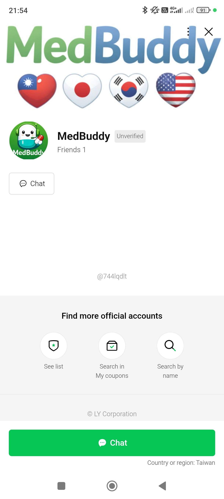
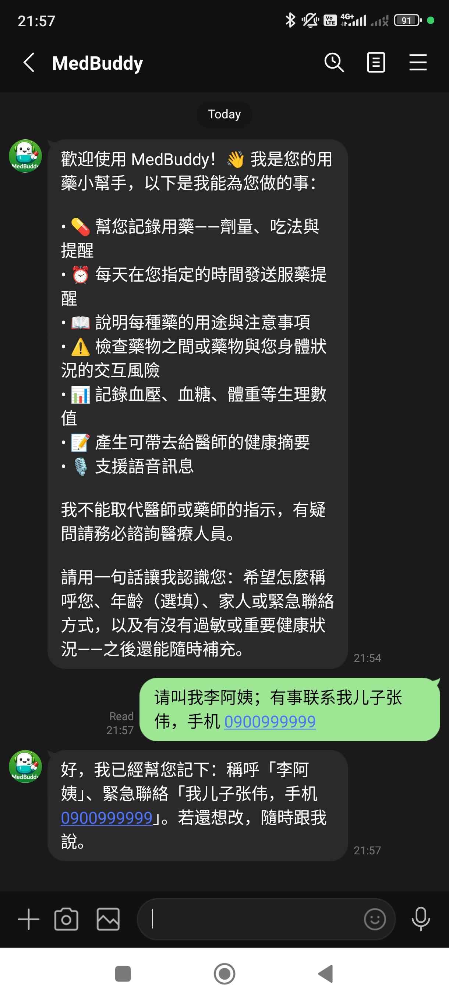
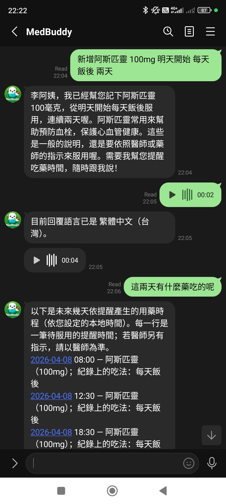
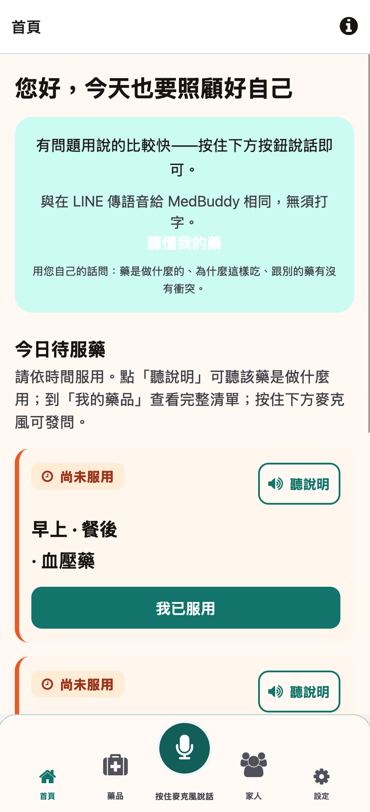
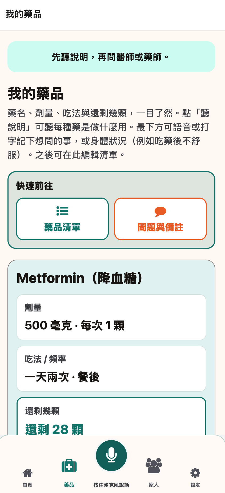

Mode
VC pitch
Full deck
Press
V
/
A
class: title nobrand, middle count: false # MedBuddy ## Chat-native medication adherence for aging Asia. ### Free for every patient — built where families already talk. .meta[ LINE-first · Traditional Chinese & English today · Japanese next · Multilingual-ready · Privacy-preserved ] <div class="title-parts title-parts--deep"> <span class="title-parts-h">Full deck sections</span> <ol> <li><strong>Part 1</strong> — Why this matters</li> <li><strong>Part 2</strong> — What MedBuddy is</li> <li><strong>Part 3</strong> — Traction & roadmap</li> </ol> <span class="title-parts-sub">Then appendices: Product · Architecture · Infra</span> </div> --- class: title deep howto, middle count: false ## How to read this deck .cols[ .col[ ### Compact (VC) — ~13 slides Press **V** or click *VC pitch*. Hides engineering deep-dives and detailed appendices. Designed to run in **10 minutes**. ] .col[ ### Full deck — every slide Press **A** or click *Full deck*. Adds product detail (PM) and architecture & scaling (CTO/Eng). ] ] .legend[ <span class="vc">VC</span> investor pitch core <span class="product">PM</span> product depth <span class="eng">ENG</span> engineering & scale (prototype / current repo) ] | Document | What you'll find | |---|---| | [PRD — short](https://github.com/israkir/medbuddy/blob/main/docs/prd.md) · [PRD — full](https://github.com/israkir/medbuddy/blob/main/docs/prd-extended.md) | Vision, goals, scope, open decisions, roadmap | | [TDD — short](https://github.com/israkir/medbuddy/blob/main/docs/tdd.md) · [TDD — full](https://github.com/israkir/medbuddy/blob/main/docs/tdd-extended.md) | Architecture, API reference, schema, ops | | [features.md](https://github.com/israkir/medbuddy/blob/main/docs/features.md) | Agent orchestration & tool catalog, LINE + API capabilities | | [privacy.md](https://github.com/israkir/medbuddy/blob/main/docs/privacy.md) | PII redaction, LLM data boundaries, compliance | | [reminders.md](https://github.com/israkir/medbuddy/blob/main/docs/reminders.md) | Dose reminder queue, arq/Redis, deploy ops | .footer[Tip · arrow keys to navigate · `c` to clone window · `p` for presenter view] --- <div class="track-tag vc">VC</div> # Codes you'll see in this deck .small[**Prefix key:** **OD** = Open Decision · **NG** = not a pilot pass/fail criterion (PRD §9 *Out of scope*) · **Ch** = revenue channel · **T1–T3** = gated future product tiers.] | Code | What it means | |---|---| | **OD-1** | **Taiwan legal classification.** Is MedBuddy a wellness app or a regulated medical device? Legal review required before Growth, B2B contracts, or T3 features. | | **OD-2** | **API identity model.** How we verify partner and user access at scale. Needed before Growth-phase API contracts. | | **OD-3** | **Voice quality bar.** The accuracy and cost targets that make voice a fully supported feature — not just a working demo. | | **OD-4** | **Clinician handoff format.** What output do institutional partners actually need from a patient summary? Gate for the T2 export product. | | **OD-5** | **Data residency rules.** Where patient data must be stored, by law. Required before entering any new country. | | **NG-1** | Voice runs in the prototype — but transcription accuracy and cost-per-turn are **not** Pilot pass/fail criteria. Those are set at OD-3. | | **T1 / T2 / T3** | Three gated future tiers: **T1** deepens the patient product · **T2** opens B2B2C · **T3** requires Series A + regulatory clearance. Not a timeline — each needs an unlock signal. | | **Ch 1–4** | Four revenue streams: **1** clinics (per patient) · **2** API partners (per API call) · **3** pharma sponsors an education program · **4** insurers pay on adherence outcomes. | | **分包** | Pharmacist-packed blister strips — the drug name isn't on the strip itself. One of the biggest friction points for building a medication list in Taiwan. | .src[Full definitions: [prd-extended.md §13 Open decisions](https://github.com/israkir/medbuddy/blob/main/docs/prd-extended.md#13-open-decisions) · [§14 Phased roadmap](https://github.com/israkir/medbuddy/blob/main/docs/prd-extended.md#14-phased-roadmap)] --- class: section deep, middle count: false .tag[Part 1 — Why this matters] # Adherence is broken. ## "Know your meds. Own your care." ### The cure is turning *fragmented care* into a *conversation* — not another reminder. .proto-appendix-lead[**Through-line:** Therapy fails in the gap between **hard-to-use med information** and **alerts that don't answer questions in-channel**.] <div class="title-parts title-parts--appendix"> <span class="title-parts-h">Next pages in this block</span> <ol> <li>The adherence gap · health literacy vs real-world adherence</li> <li>Problem → cost (clinical load & economics)</li> <li>Why pings alone don't work (reminder loop without comprehension)</li> </ol> </div> --- <div class="track-tag vc">VC</div> # The adherence gap .cols[ .col[ <div class="gap-slide-wrap"> <div class="gap-hero"> .diagram[ <svg viewBox="0 0 280 220" xmlns="http://www.w3.org/2000/svg" width="280" height="220" aria-label="About half of patients achieve real-world adherence on chronic medications"> <defs> <linearGradient id="gap-ring-track" x1="0%" y1="0%" x2="100%" y2="100%"> <stop offset="0%" stop-color="#f2f7f5"/> <stop offset="100%" stop-color="#e4eee9"/> </linearGradient> <linearGradient id="gap-ring-accent" x1="0%" y1="0%" x2="100%" y2="100%"> <stop offset="0%" stop-color="#ffb399"/> <stop offset="55%" stop-color="#ff7a59"/> <stop offset="100%" stop-color="#e85a38"/> </linearGradient> <filter id="gap-ring-glow" x="-20%" y="-20%" width="140%" height="140%"> <feDropShadow dx="0" dy="2" stdDeviation="3" flood-color="#ff7a59" flood-opacity="0.22"/> </filter> </defs> <ellipse cx="140" cy="210" rx="68" ry="6" fill="#0f1f1d" opacity="0.06"/> <circle cx="140" cy="112" r="96" fill="none" stroke="url(#gap-ring-track)" stroke-width="22"/> <circle cx="140" cy="112" r="96" fill="none" stroke="url(#gap-ring-accent)" stroke-width="22" stroke-dasharray="301.59 603.19" transform="rotate(-90 140 112)" stroke-linecap="round" filter="url(#gap-ring-glow)"/> <text x="140" y="100" text-anchor="middle" font-size="46" font-weight="800" fill="#066658" font-family="Inter, sans-serif">~50%</text> <text x="140" y="128" text-anchor="middle" font-size="13.5" fill="#586a67" font-family="Inter, sans-serif">real-world adherence</text> <text x="140" y="148" text-anchor="middle" font-size="11.5" fill="#7a8683" font-family="Inter, sans-serif">on chronic medications</text> </svg> ] <div class="gap-literacy-compare"> <div class="glc-title">Share who <strong>stay on therapy</strong> — split by how easy medication information is to use</div> <div class="glc-row"> <span class="glc-label">Med information feels hard</span> <div class="glc-track"><span class="glc-fill glc-low">50%</span></div> </div> <div class="glc-row"> <span class="glc-label">Med information feels easy</span> <div class="glc-track"><span class="glc-fill glc-high">84%</span></div> </div> <div class="glc-sub">*Each bar is the <strong>adherence rate within that group</strong> (people on chronic meds who stick to therapy) — not “50% of all patients.”</div> </div> </div> </div> ] ] .src.src--compact[Sources: [WHO (2003) — *Adherence to long-term therapies*](https://iris.who.int/handle/10665/42682) · [Brown & Bussell (2011) — *Mayo Clin Proc.*](https://www.sciencedirect.com/science/article/abs/pii/S0025619611600074); the **~50%** “real world” rate still shows up in modern reviews of people on **several medications at once** ([PubMed 37499332](https://pubmed.ncbi.nlm.nih.gov/37499332/)). **Can you read the label?** Patients who struggle with health information stick to therapy **50%** of the time vs **84%** for those who don’t (~**2.6×** higher odds of slipping; 95% CI: 2.2–3.1 — [PMC12360272](https://pmc.ncbi.nlm.nih.gov/articles/PMC12360272/), n=13,324). **Asia:** Taiwan pilot **25.8%** not following meds as prescribed ([PMC11236195](https://pmc.ncbi.nlm.nih.gov/articles/PMC11236195/)); Korea (older diabetics on multiple drugs) **12.5%** not adherent ([PMC12100990](https://pmc.ncbi.nlm.nih.gov/articles/PMC12100990/)).] --- <div class="track-tag vc">VC</div> # Problem → cost <div style="display:flex;gap:2em;margin:0.3em 0 0.7em;justify-content:flex-start;align-items:flex-start"> <div style="text-align:center;min-width:6.5em"><span style="font-size:1.65em;font-weight:800;color:#066658;display:block;line-height:1.1">25%</span><span style="font-size:0.62em;color:#586a67;line-height:1.35;display:block">of all hospitalizations<br>trace to non-adherence</span></div> <div style="text-align:center;min-width:6.5em"><span style="font-size:1.65em;font-weight:800;color:#066658;display:block;line-height:1.1">~$16K</span><span style="font-size:0.62em;color:#586a67;line-height:1.35;display:block">average 30-day<br>readmission cost</span></div> <div style="text-align:center;min-width:6.5em"><span style="font-size:1.65em;font-weight:800;color:#066658;display:block;line-height:1.1">≥40%</span><span style="font-size:0.62em;color:#586a67;line-height:1.35;display:block">of Taiwan NHI chronic<br>patients non-adherent</span></div> </div> <div class="ps-grid"> <div class="row"><div class="problem">2–6 daily meds — polypharmacy (5+) is the norm after 65, often more after a hospital stay</div><div class="arrow">→</div><div class="solution">Annual costs nearly <strong>double</strong> for polypharmacy patients ($19K vs $8.8K/yr). Only <strong>1 in 3</strong> patients is still on a new chronic therapy after 12 months.</div></div> <div class="row"><div class="problem">Package inserts written for regulators, not patients — clinical language, no follow-up channel in the moment of confusion</div><div class="arrow">→</div><div class="solution">Low health literacy patients have <strong>~2.6×</strong> the odds of missing meds; <strong>35% more</strong> return within 30 days. In Taiwan, ≥<strong>40%</strong> of NHI diabetes patients are non-adherent — linked to higher ICU admission rates.</div></div> <div class="row"><div class="problem">Clinic visits are short; the question that wasn't asked doesn't get answered until the next crisis</div><div class="arrow">→</div><div class="solution"><strong>33–69%</strong> of medication-related hospitalizations are avoidable. At ~$16K per stay, every unanswered question about a side effect or interaction has a measurable price.</div></div> </div> .src[25% hospitalizations / 33–69% avoidable: [Frontiers Pharmacol 2021](https://www.frontiersin.org/articles/10.3389/fphar.2021.567424/full) · Readmission cost ($16K avg): [AHRQ StatBrief 2020](https://hcup-us.ahrq.gov/reports/statbriefs/sb307-readmissions-2020.jsp) · Polypharmacy costs (US MEPS): [PMC9313779](https://pmc.ncbi.nlm.nih.gov/articles/PMC9313779/) · 1-in-3 retention: [IQVIA Use of Medicines 2024](https://www.iqvia.com/insights/the-iqvia-institute/reports-and-publications) · 2.6× / 35% readmission (95% CI 1.1–1.5): [PMC12360272](https://pmc.ncbi.nlm.nih.gov/articles/PMC12360272/) · Taiwan NHI ≥40%: [PLOS ONE 2024](https://doi.org/10.1371/journal.pone.0304442)] --- <div class="track-tag vc">VC</div> # Why pings alone don't work .ping-loop-stack[ .diagram[ <svg viewBox="0 0 800 362" xmlns="http://www.w3.org/2000/svg" style="width:100%; max-width:880px" font-family="Inter, 'Noto Sans TC', system-ui, sans-serif" aria-label="Patient perspective — reminder loop from ping through confusion to ignored"> <defs> <marker id="ping-arrow" viewBox="0 0 6 6" markerWidth="6" markerHeight="6" refX="5.5" refY="3" orient="auto" markerUnits="userSpaceOnUse"><polygon points="0 0, 6 3, 0 6" fill="#4a5f5a"/></marker> <marker id="loop-arrow" viewBox="0 0 6 6" markerWidth="6" markerHeight="6" refX="5.5" refY="3" orient="auto" markerUnits="userSpaceOnUse"><polygon points="0 0, 6 3, 0 6" fill="#c45c48"/></marker> </defs> <!-- Caption: echoes the loop graphic; two-line stack + accent bar align with deck h1 treatment --> <text x="400" y="22" text-anchor="middle" font-size="15" font-weight="800" fill="#044a40" letter-spacing="-0.04em">The reminder loop</text> <text x="400" y="40" text-anchor="middle" font-size="10.5" font-weight="500" fill="#586a67" letter-spacing="0.02em">without comprehension</text> <line x1="368" y1="48" x2="432" y2="48" stroke="#ff7a59" stroke-width="2.5" stroke-linecap="round"/> <!-- 172px cards · 100px gutters — long gap copy is split to fit inside gutters (single-line labels overflowed into cards) --> <rect x="20" y="98" width="172" height="190" rx="14" fill="#fff3ee" stroke="#ff7a59" stroke-width="2"/> <text x="106" y="148" text-anchor="middle" font-size="13.5" font-weight="700" fill="#a04a35">Ping 🔔</text> <text x="106" y="168" text-anchor="middle" font-size="10.5" fill="#586a67">“Take dose” nudge</text> <text x="106" y="186" text-anchor="middle" font-size="9.25" fill="#7a8683">SMS · app · ward board</text> <text x="106" y="204" text-anchor="middle" font-size="9.25" fill="#7a8683"><tspan font-weight="600" fill="#8b5a45">No</tspan> med thread</text> <text x="106" y="222" text-anchor="middle" font-size="9.25" fill="#7a8683">no who / what / why</text> <rect x="292" y="98" width="172" height="190" rx="14" fill="#eef4f2" stroke="#066658" stroke-width="2"/> <text x="378" y="128" text-anchor="middle" font-size="13.5" font-weight="700" fill="#066658">Confused?</text> <text x="378" y="146" text-anchor="middle" font-size="10" fill="#586a67">“What is this pill?”</text> <text x="378" y="162" text-anchor="middle" font-size="10" fill="#586a67">“With my other meds?”</text> <text x="378" y="180" text-anchor="middle" font-size="9.25" fill="#7a8683">Insert is clinical · visit rushed</text> <text x="378" y="196" text-anchor="middle" font-size="9.25" fill="#7a8683"><tspan font-weight="600" fill="#066658">No one to ask</tspan> in 10 seconds</text> <line x1="302" y1="208" x2="454" y2="208" stroke="#cfe2dd" stroke-width="1.2"/> <text x="378" y="222" text-anchor="middle" font-size="8.25" font-weight="700" fill="#066658" letter-spacing="0.06em">FROM MY SIDE · I CAN'T…</text> <text x="302" y="238" font-size="8.25" fill="#3d524e">• Combine — <tspan font-style="italic">OK with other drugs?</tspan></text> <text x="302" y="254" font-size="8.25" fill="#3d524e">• Act early — <tspan font-style="italic">side effect from this med?</tspan></text> <text x="302" y="270" font-size="8.25" fill="#3d524e">• Prepare — <tspan font-style="italic">what to ask at my visit?</tspan></text> <rect x="564" y="98" width="172" height="190" rx="14" fill="#0f1f1d" stroke="#2a3f3a" stroke-width="2"/> <text x="650" y="148" text-anchor="middle" font-size="13.5" font-weight="700" fill="#ff7a59">Ignored</text> <text x="650" y="168" text-anchor="middle" font-size="10.5" fill="#b8e6dc">skip · snooze · tune out</text> <text x="650" y="188" text-anchor="middle" font-size="9.25" fill="#8cb8ae">notification fatigue</text> <text x="650" y="208" text-anchor="middle" font-size="9.25" fill="#8cb8ae">trust in the next ping <tspan font-weight="600" fill="#ff9b7a">drops</tspan></text> <!-- Stacked lines stay within ~100px gutter width; block sits above arrows (y ≥ 200) --> <text x="242" y="152" text-anchor="middle" font-size="8.25" font-weight="700" fill="#066658">No answer in this tap</text> <text x="242" y="166" text-anchor="middle" font-size="7.35" fill="#5f726e" font-style="italic">who · what · why</text> <text x="242" y="178" text-anchor="middle" font-size="7.35" fill="#5f726e" font-style="italic">aren't in-thread</text> <text x="514" y="152" text-anchor="middle" font-size="8.25" font-weight="700" fill="#066658">Doubt doesn't clear</text> <text x="514" y="166" text-anchor="middle" font-size="7.35" fill="#5f726e" font-style="italic">next nudge is easier</text> <text x="514" y="178" text-anchor="middle" font-size="7.35" fill="#5f726e" font-style="italic">to dismiss</text> <line x1="192" y1="198" x2="292" y2="198" stroke="#5a7a72" stroke-width="2.25" stroke-linecap="round" marker-end="url(#ping-arrow)"/> <line x1="464" y1="198" x2="564" y2="198" stroke="#5a7a72" stroke-width="2.25" stroke-linecap="round" marker-end="url(#ping-arrow)"/> <path d="M 650 288 Q 378 342 106 288" fill="none" stroke="#c45c48" stroke-width="2.25" stroke-dasharray="6 5" marker-end="url(#loop-arrow)"/> <text x="378" y="332" text-anchor="middle" font-size="10" fill="#a04a35" font-style="italic">The ping still fires — doubt stays — I skip or guess — the next alert feels even less worth opening.</text> <text x="378" y="350" text-anchor="middle" font-size="8.75" fill="#586a67">Same gap next time until something in-channel answers me or I stop engaging entirely.</text> </svg> ] ] --- class: section deep, middle count: false .tag[Part 2 — What MedBuddy is about] # Conversation as the product ## One thread: The med list, plain-language **Q&A**, and **adherence** — together. ### Voice or text. Traditional Chinese and English today, Japanese next. .proto-appendix-lead[**Through-line:** **One assistant core** — comprehension-first chat that earns the right to remind; multilingual & voice-ready.] <div class="title-parts title-parts--appendix"> <span class="title-parts-h">Next pages in this block</span> <ol> <li>MedBuddy's wedge · three jobs today, coordination layer next</li> <li>What it feels like · why now · market sizing · markets we're not chasing</li> <li>Business model · income channels (surfaces, references, guardrails)</li> <li>Competitive landscape</li> </ol> </div> --- <div class="track-tag vc">VC</div> # What MedBuddy is — three forces, one thread .cols[ .col[ .diagram[ <svg class="wedge-rect" viewBox="0 0 400 276" xmlns="http://www.w3.org/2000/svg" style="width:100%; max-width:400px" aria-label="MedBuddy wedge: three forces — chat-native channel, comprehension, localization — overlapping one assistant core"> <defs> <filter id="wedge-hub-shadow" x="-12%" y="-12%" width="124%" height="124%"> <feDropShadow dx="0" dy="3" stdDeviation="4" flood-color="#044a40" flood-opacity="0.24"/> </filter> <linearGradient id="wedge-hub-fill" x1="0%" y1="0%" x2="100%" y2="100%"> <stop offset="0%" stop-color="#0a8f7a"/> <stop offset="100%" stop-color="#066658"/> </linearGradient> </defs> <!-- Three overlapping rounded rects --> <rect x="4" y="28" width="224" height="152" rx="22" fill="#0a8f7a" fill-opacity="0.14" stroke="#066658" stroke-width="1.8" stroke-opacity="0.78"/> <rect x="172" y="28" width="224" height="152" rx="22" fill="#ff7a59" fill-opacity="0.14" stroke="#a04a35" stroke-width="1.8" stroke-opacity="0.78"/> <rect x="36" y="108" width="328" height="132" rx="22" fill="#6b3fa0" fill-opacity="0.12" stroke="#4a2070" stroke-width="1.8" stroke-opacity="0.8"/> <text x="18" y="58" font-size="11.5" font-weight="700" fill="#044a40">Chat-native channel</text> <text x="18" y="76" font-size="9.5" fill="#2d4541">LINE · Kakao · WhatsApp</text> <text x="18" y="92" font-size="9.5" fill="#2d4541">zero install · family-trust</text> <text x="382" y="58" text-anchor="end" font-size="11.5" font-weight="700" fill="#8b3d2e">Comprehension</text> <text x="382" y="76" text-anchor="end" font-size="9.5" fill="#5c4038">plain-language, grounded</text> <text x="382" y="92" text-anchor="end" font-size="9.5" fill="#5c4038">never just alerts</text> <text x="200" y="214" text-anchor="middle" font-size="11" font-weight="700" fill="#3d2a5c">Localization & personalization</text> <text x="200" y="230" text-anchor="middle" font-size="9.25" fill="#4a3d66">Traditional Chinese & English today · Japanese, Korean, and Thai next</text> <rect x="108" y="122" width="184" height="46" rx="14" fill="url(#wedge-hub-fill)" stroke="#05584c" stroke-width="1.1" filter="url(#wedge-hub-shadow)"/> <text x="200" y="152" text-anchor="middle" font-size="15" font-weight="800" fill="#f4fffd">MedBuddy</text> </svg> ] ] .col[ Three forces that compound into a defensible position: - **Chat-native channel** — patients live inside [LINE](https://linecorp.com/en/) (Taiwan, Japan, Thailand), [KakaoTalk](https://www.kakaocorp.com/page/) (Korea), [WhatsApp](https://www.whatsapp.com/) (Indonesia). Zero install, family-trust on day one. - **Comprehension > alerts** — one thread holds the med list, plain-language Q&A, dose reminders and adherence — never another silent ping. - **Localization & personalization** — **Traditional Chinese & English today** · **Japanese, Korean, and Thai** next; the locale system, redaction rules and persona scaffolding extend without forking the product. ] ] **One thread. 📋 List · 💬 Ask · ⏰ Adhere.** .cols[ .col[ ### 📋 List Add · update · remove in natural language. *"Add metformin 500 mg, twice a day"* → confirmed, saved, reminders set. ] .col[ ### 💬 Ask Plain-language Q&A grounded in a public drug registry ([OpenFDA](https://open.fda.gov/) today; TFDA / PMDA at Growth). Never diagnostic. ] .col[ ### ⏰ Adhere Reminder at the right local time. Reply "took it" or "missed" to log. One ping per dose, no duplicates. ] ] .small[**At Growth:** the same structured logs power **📊 Track** (caregiver visibility) and **📝 Summarize** (doctor-ready handoff) — not a second product.] .src[Voice in/out via [Google Speech-to-Text v2](https://cloud.google.com/speech-to-text) and [Cloud TTS](https://cloud.google.com/text-to-speech) when enabled · same assistant pipeline for typed and transcribed input] --- <div class="track-tag vc">VC</div> # What it feels like .cols[ .col[ **LINE — primary surface today** <div class="feel-like-strip"> <p></p> <p></p> <p></p> </div> ] .col[ **Beyond LINE — same assistant** Pick where patients meet it: - **Our app** — MedBuddy on the phone *(screens below — reference UI)* - **Partner app** — same chat experience inside their product Same engine under the hood. **Right now** the pilot is LINE; the same backend powers the **reference Expo client** and any partner integration through `/v1/app/*` — one product, one assistant core, multiple surfaces. <div class="feel-like-mobile-shots"> <p></p> <p></p> </div> ] ] .src[Voice live for opted-in users — see traction slide for status and SLA timeline.] --- <div class="track-tag vc">VC</div> # Why now — four forces converge across Asia <!-- Quad order (TL→TR→BL→BR): aging · chat · LLM economics · drug data --> .quad[ .cell[ .h4[👵 Asia is aging first] Japan is already super-aged (29% over 65); Korea and Taiwan cross the line in 2025–26. Multiple chronic meds is normal — **35.4%** of older Taiwanese, **33.1%** of older Japanese. That’s the everyday reality we’re building for. ] .cell[ .h4[📱 Chat platforms are mature] LINE (~21M TW · ~95M JP · ~55M TH), KakaoTalk (~48M KR), WhatsApp (~140M ID). Webhook + voice + rich-push APIs are stable across the board. ] .cell[ .h4[🤖 LLM economics crossed over] Google Gemini and OpenAI GPT-class small models deliver clinical-grade language at **<US$0.01 / turn** — sub-cent with caching. Two years ago, this didn’t exist. ] .cell[ .h4[📂 Drug data is open] OpenFDA gives machine-readable labels today; TFDA, PMDA, MFDS **follow at Growth phase**. No scraping, no licensing. ] ] .src[Sources: **Demographics & polypharmacy** — [Japan Statistics Bureau](https://www.stat.go.jp/english/) · [Taiwan NDC](https://www.ndc.gov.tw/en/Content_List.aspx?n=2688C8F5935982DC) · [Statistics Korea](https://kostat.go.kr/anse/) · [PubMed 37499332](https://pubmed.ncbi.nlm.nih.gov/37499332/) (TW **35.4%** / JP **33.1%** polypharmacy in older adults) · [SAGE Open Med. 2019](https://journals.sagepub.com/doi/10.1177/2010105819868485) (Singapore — odds of non-adherence on multiple meds). **Chat MAUs** — [LINE Corp.](https://linecorp.com/en/) · [Kakao](https://www.kakaocorp.com/page/) · [WhatsApp](https://www.whatsapp.com/). **LLM APIs & pricing** — [Google Gemini models](https://ai.google.dev/gemini-api/docs/models) · [OpenAI models](https://platform.openai.com/docs/models). **Drug labels & regulators** — [openFDA](https://open.fda.gov/) · [TFDA](https://www.fda.gov.tw/) · [PMDA](https://www.pmda.go.jp/english/) · [MFDS](https://www.mfds.go.kr/eng/).] --- <div class="track-tag vc">VC</div> # Market sizing — TAM ▶ SAM ▶ SOM .cols.cols--market-sizing[ .col[ .diagram[ <svg viewBox="0 0 420 340" xmlns="http://www.w3.org/2000/svg" style="width:100%; max-width:400px"> <!-- Funnel: 3 layers; bottom tier widened so SOM copy fits inside narrow band --> <polygon points="10,20 410,20 360,100 60,100" fill="#eef4f2" stroke="#066658" stroke-width="1.5"/> <polygon points="60,100 360,100 305,190 115,190" fill="#cfe2dd" stroke="#066658" stroke-width="1.5"/> <polygon points="115,190 305,190 275,288 145,288" fill="#0a8f7a" stroke="#066658" stroke-width="1.5"/> <!-- TAM (centered vertically in top tier) --> <text x="210" y="42" text-anchor="middle" font-size="14" font-weight="700" fill="#066658" font-family="Inter, sans-serif">TAM</text> <text x="210" y="61" text-anchor="middle" font-size="10.5" fill="#0f1f1d" font-family="Inter, sans-serif">Global chat-native chronic care</text> <text x="210" y="75" text-anchor="middle" font-size="9.5" fill="#586a67" font-family="Inter, sans-serif">~300M+ polypharmacy older adults worldwide</text> <text x="210" y="88" text-anchor="middle" font-size="9" fill="#586a67" font-family="Inter, sans-serif">LINE · WhatsApp · KakaoTalk</text> <!-- SAM (kept fully inside middle tier) --> <text x="210" y="124" text-anchor="middle" font-size="14" font-weight="700" fill="#066658" font-family="Inter, sans-serif">SAM</text> <text x="210" y="145" text-anchor="middle" font-size="10.25" fill="#0f1f1d" font-family="Inter, sans-serif">Polypharmacy adults via LINE:</text> <text x="210" y="158" text-anchor="middle" font-size="10.25" fill="#0f1f1d" font-family="Inter, sans-serif">Taiwan + Japan</text> <text x="210" y="173" text-anchor="middle" font-size="9.25" fill="#586a67" font-family="Inter, sans-serif">~3M TW · ~12M JP · both super-aged societies</text> <!-- SOM — vertically centered in green tier (y 190–288 → midpoint 239) --> <g transform="translate(210,239)" font-family="Inter, sans-serif"> <text text-anchor="middle" y="-17" font-size="13" font-weight="700" fill="#ffffff">SOM (3-yr)</text> <text text-anchor="middle" y="2" font-size="9" fill="#ffffff">25–60K active patients (free)</text> <text text-anchor="middle" y="15" font-size="9" fill="#ffffff">4–8 partners · 2–4 PSPs</text> <text text-anchor="middle" y="28" font-size="9" fill="#ffffff">2 markets</text> </g> </svg> ] <div class="market-stat-row"> <div class="stat"><span class="num">21M</span><span class="lbl">LINE MAU · 🇹🇼 Taiwan</span><span class="stat-meta">~90% of population · super-aged since 2025 · ~3M chronic care (SAM band)</span></div> <div class="stat"><span class="num">99M</span><span class="lbl">LINE MAU · 🇯🇵 Japan</span><span class="stat-meta">~77% of population · super-aged 30%+ over 65 · ~12M chronic care (SAM band)</span></div> <div class="stat"><span class="num">3B+</span><span class="lbl">WhatsApp MAU · 🌍 Global</span><span class="stat-meta">~300M+ polypharmacy older adults worldwide · TAM ceiling via WhatsApp adapter (T3.3 — Series A gate)</span></div> </div> ] .col[ **Market Sequence** | | Phase | Channel | Gate | |---|---|---|---| | 🇹🇼 Taiwan | **MVP · solo** | LINE · Traditional Chinese | Pilot exit criteria | | 🇯🇵 Japan | **Growth · post-raise** | LINE · Japanese + PMDA data | Pilot exit + OD-1 | | 🇰🇷 Korea | Regional | KakaoTalk · Korean | Series A + KR drug data | | 🇹🇭 🇮🇩 SEA (TH · ID) | Regional | LINE / WhatsApp | Series A | | 🇸🇬 🇭🇰 (B2B2C first) | Regional · T2/T3 | WhatsApp · English + zh-HK | T2 partner LOI or T3 WhatsApp adapter | | 🇻🇳 🇵🇭 (channel-first) | Post-Series A · T3 | Zalo (VN) · Messenger (PH) | T3 channel adapter + country drug data | | 🇨🇳 China | Not on roadmap | Different stack required | Separate JV decision — not this product | .small[Each new market = one channel adapter + one locale pack + one drug-data source. Assistant core unchanged. China requires a separate product (WeChat + approved domestic LLM + onshore infra) — evaluated as a JV, not an expansion.] ] ] .src[Sources: [LINE Corp.](https://linecorp.com/en/) MAU disclosures (TW + JP) · JP 99M MAU — [Elite Asia Digital Trends 2026](https://www.eliteasia.co/digital-and-social-media-trends-in-japan-in-2026/) · TW super-aged milestone (2025) — [Taiwan MoF LTCI bulletin 2026](https://service.mof.gov.tw/public/Data/statistic/bulletin/115/2026_02_LONG_TERM.pdf) · [Taiwan NIA LINE penetration](https://news.immigration.gov.tw/NewsSection/Detail/9bf0464b-2023-4b49-9e68-dd3d8a7bb9ca?lang=EN) · **WhatsApp 3B+ MAU** — Meta Q4 2024 earnings release · **Global polypharmacy ~300M+** — [Masnoon et al. BJCP 2017](https://bpspubs.onlinelibrary.wiley.com/doi/10.1111/bcp.13261) (systematic review, ~37% prevalence in older adults) × [UN DESA World Population Prospects 2023](https://population.un.org/wpp/) (771M people aged 65+) · [Taiwan DGBAS](https://eng.stat.gov.tw/) · [Japan Statistics Bureau](https://www.stat.go.jp/english/data/jinsui/tsuki/index.html) · [Japan MHLW](https://www.mhlw.go.jp/english/) · [Taiwan MoHW](https://www.mohw.gov.tw/mp-2.html) · [WHO (2003) — adherence to long-term therapies](https://iris.who.int/handle/10665/42682) · [PMC12360272](https://pmc.ncbi.nlm.nih.gov/articles/PMC12360272/) · [PubMed 37499332](https://pubmed.ncbi.nlm.nih.gov/37499332/) · [PMC11236195](https://pmc.ncbi.nlm.nih.gov/articles/PMC11236195/) · [PMC12100990](https://pmc.ncbi.nlm.nih.gov/articles/PMC12100990/) · [Kakao](https://www.kakaocorp.com/page/) MAU · [Korea Stats](https://kostat.go.kr/anse/) · [Taiwan NDC](https://www.ndc.gov.tw/en/Content_List.aspx?n=2688C8F5935982DC).] --- <div class="track-tag vc">VC</div> # Markets we're not chasing — and when we will > A market is "in" when it has **(1) a single dominant chat app with a stable webhook API, (2) a regulatory path for a wellness companion, and (3) a concentrated polypharmacy burden.** Taiwan and Japan are the only two markets that clear all three today. | Market | Why not now | When we enter | |---|---|---| | 🇨🇳 China (PRC) | LINE is blocked. Only WeChat/Weixin works — gated behind ICP + MIIT registration. Foreign LLMs (Gemini, OpenAI) are not approved; must use Ernie/Qwen/Doubao on licensed infra. NMPA device regulation + PIPL data-on-shore. **Different product, not a market.** | No roadmap entry. A future China play is a separate JV, separate stack. | | 🇭🇰 Hong Kong | LINE <5% penetration. WhatsApp + WeChat dominant. Real demographic load (~7.5M, aging), but too small to justify a launch budget. Locale is zh-HK (Cantonese), not zh-TW. | Folds into the **WhatsApp channel adapter** at T3. Same assistant, one locale pack added. | | 🇸🇬 Singapore | LINE negligible. WhatsApp + Telegram dominant. ~5.6M population, English-majority — the Traditional-Chinese-first wedge is weaker here. Best B2B2C buyer (insurer / pharma), not a consumer beachhead. | **T2 B2B2C** (insurer / pharma partner). **T3 WhatsApp** for consumer surface. | | 🇻🇳 Vietnam | Zalo dominant (~74M MAU). LINE single-digit %. No clean public drug API (DAV-MoH only). Vietnamese only — separate locale. Polypharmacy load building but not yet peaked. | **T3 channel bet** — Zalo Official Account adapter after the WhatsApp adapter proves the playbook. | | 🇵🇭 Philippines | Facebook Messenger + Viber dominant. English-friendly, ~115M population, but younger demographics (median ~25) and fragmented chronic-care market. | **T3 / Post-Series A** — Messenger adapter, English locale already covered. | .src[**LINE penetration** — [LINE Corp.](https://linecorp.com/en/) · [Taiwan NIA](https://news.immigration.gov.tw/NewsSection/Detail/9bf0464b-2023-4b49-9e68-dd3d8a7bb9ca?lang=EN) · [Statista HK LINE share](https://www.statista.com/) · **WeChat** — [Tencent Q1 2025 earnings](https://www.tencent.com/en-us/investors.html) · **China LLM regulation** — [CAC Generative AI Measures 2023](https://www.cac.gov.cn/2023-07/13/c_1690898327029107.htm) · **PIPL / DSL** — [PIPL (2021)](http://www.npc.gov.cn/npc/c30834/202108/a8c4e3672c74491a80b53a172bb753fe.shtml) · **NMPA digital health** — [NMPA](https://www.nmpa.gov.cn/english/) · **Zalo MAU** — [VNG Corp 2024](https://www.vng.com.vn/en) · **Philippines demographics** — [PSA 2024](https://psa.gov.ph/) · **Singapore PDPA** — [PDPC](https://www.pdpc.gov.sg/) · **HK aging** — [Census and Statistics Dept HK](https://www.censtatd.gov.hk/en/).] --- class: bm-model <div class="track-tag vc">VC</div> # Business model .bm-slide-wrap[ .bm-diagram-hold[ .diagram[ <svg viewBox="0 0 540 380" xmlns="http://www.w3.org/2000/svg" font-family="Inter, 'Noto Sans TC', sans-serif"> <defs> <marker id="bm-arrow" viewBox="0 0 6 6" markerWidth="6" markerHeight="6" refX="6" refY="3" orient="auto" markerUnits="userSpaceOnUse"><polygon points="0,0 6,3 0,6" fill="#066658"/></marker> <marker id="bm-money" viewBox="0 0 6 6" markerWidth="6" markerHeight="6" refX="6" refY="3" orient="auto" markerUnits="userSpaceOnUse"><polygon points="0,0 6,3 0,6" fill="#ff7a59"/></marker> <marker id="bm-grant" viewBox="0 0 6 6" markerWidth="6" markerHeight="6" refX="6" refY="3" orient="auto" markerUnits="userSpaceOnUse"><polygon points="0,0 6,3 0,6" fill="#6b3fa0"/></marker> <linearGradient id="bm-core" x1="0" y1="0" x2="1" y2="1"> <stop offset="0%" stop-color="#0a8f7a"/> <stop offset="100%" stop-color="#066658"/> </linearGradient> <linearGradient id="bm-buyer" x1="0" y1="0" x2="0" y2="1"> <stop offset="0%" stop-color="#fff8f5"/> <stop offset="100%" stop-color="#fff3ee"/> </linearGradient> </defs> <!-- Column headers --> <text x="80" y="22" text-anchor="middle" font-size="10" font-weight="800" letter-spacing="0.18em" fill="#066658">PATIENT-SIDE</text> <text x="270" y="22" text-anchor="middle" font-size="10" font-weight="800" letter-spacing="0.18em" fill="#0f1f1d">PRODUCT</text> <text x="451" y="22" text-anchor="middle" font-size="10" font-weight="800" letter-spacing="0.18em" fill="#a04a35">REVENUE</text> <line x1="40" y1="32" x2="120" y2="32" stroke="#066658" stroke-width="2"/> <line x1="220" y1="32" x2="320" y2="32" stroke="#0f1f1d" stroke-width="2"/> <line x1="372" y1="32" x2="530" y2="32" stroke="#a04a35" stroke-width="2"/> <!-- Patient column: avatar card --> <g> <rect x="20" y="155" width="120" height="76" rx="14" fill="#eef4f2" stroke="#066658" stroke-width="1.6"/> <circle cx="80" cy="180" r="13" fill="#066658"/> <text x="80" y="184" text-anchor="middle" font-size="14" fill="#ffffff">👤</text> <text x="80" y="208" text-anchor="middle" font-size="13" font-weight="700" fill="#066658">Patient</text> <text x="80" y="222" text-anchor="middle" font-size="10" fill="#586a67">+ caregiver</text> </g> <text x="80" y="248" text-anchor="middle" font-size="11" font-weight="700" fill="#066658">FREE — FOREVER</text> <text x="80" y="262" text-anchor="middle" font-size="10" fill="#586a67">no ads · no upsell</text> <!-- MedBuddy core: prominent gradient card --> <g> <rect x="200" y="138" width="140" height="110" rx="16" fill="url(#bm-core)" stroke="#044a40" stroke-width="2"/> <text x="270" y="172" text-anchor="middle" font-size="17" font-weight="800" fill="#ffffff" letter-spacing="-0.01em">MedBuddy</text> <line x1="226" y1="184" x2="314" y2="184" stroke="#ffffff" stroke-opacity="0.4" stroke-width="1"/> <text x="270" y="204" text-anchor="middle" font-size="10" fill="#ffffff">one assistant core</text> <text x="270" y="220" text-anchor="middle" font-size="10" fill="#b8e6dc">LINE + partner</text> <text x="270" y="234" text-anchor="middle" font-size="10" fill="#b8e6dc">integrations</text> </g> <!-- Patient ↔ MedBuddy: service two-way --> <line x1="140" y1="183" x2="200" y2="183" stroke="#066658" stroke-width="1.8" marker-end="url(#bm-arrow)"/> <line x1="200" y1="203" x2="140" y2="203" stroke="#066658" stroke-width="1.8" marker-end="url(#bm-arrow)"/> <text x="170" y="178" text-anchor="middle" font-size="9" font-weight="700" fill="#066658">trust</text> <text x="170" y="217" text-anchor="middle" font-size="9" font-weight="700" fill="#066658">care</text> <!-- Revenue column: x=372 w=158 (edge 530) — wide enough to avoid label clipping; rows centered on cy --> <g font-family="Inter, 'Noto Sans TC', sans-serif"> <!-- Clinics & pharmacies · cy=74 --> <rect x="372" y="50" width="158" height="48" rx="10" fill="url(#bm-buyer)" stroke="#ff7a59" stroke-width="1.4"/> <g transform="translate(451,74)"> <text x="-50" y="0" text-anchor="middle" font-size="14" dominant-baseline="middle">🏥</text> <text x="-34" y="-6" text-anchor="start" font-size="10.5" font-weight="700" fill="#a04a35">Clinics &</text> <text x="-34" y="8" text-anchor="start" font-size="10.5" font-weight="700" fill="#a04a35">pharmacies</text> </g> <!-- API integrators · cy=129 --> <rect x="372" y="105" width="158" height="48" rx="10" fill="url(#bm-buyer)" stroke="#ff7a59" stroke-width="1.4"/> <g transform="translate(451,129)"> <text x="-50" y="0" text-anchor="middle" font-size="14" dominant-baseline="middle">🔌</text> <text x="-34" y="-6" text-anchor="start" font-size="10.5" font-weight="700" fill="#a04a35">API integrators</text> <text x="-34" y="7" text-anchor="start" font-size="10" fill="#586a67">EHR · health-tech</text> </g> <!-- Pharma PSPs · cy=184 --> <rect x="372" y="160" width="158" height="48" rx="10" fill="url(#bm-buyer)" stroke="#ff7a59" stroke-width="1.4"/> <g transform="translate(451,184)"> <text x="-50" y="0" text-anchor="middle" font-size="14" dominant-baseline="middle">💊</text> <text x="-34" y="-6" text-anchor="start" font-size="10.5" font-weight="700" fill="#a04a35">Pharma PSPs</text> <text x="-34" y="8" text-anchor="start" font-size="10" fill="#586a67">editorial firewall</text> </g> <!-- Insurers / NHI · cy=239 --> <rect x="372" y="215" width="158" height="48" rx="10" fill="url(#bm-buyer)" stroke="#ff7a59" stroke-width="1.4"/> <g transform="translate(451,239)"> <text x="-50" y="0" text-anchor="middle" font-size="14" dominant-baseline="middle">🛡️</text> <text x="-34" y="-6" text-anchor="start" font-size="10.5" font-weight="700" fill="#a04a35">Insurers / NHI</text> <text x="-34" y="8" text-anchor="start" font-size="10" fill="#586a67">value-based</text> </g> <!-- Grants · cy=291 --> <rect x="372" y="270" width="158" height="42" rx="10" fill="#ecebf6" stroke="#6b3fa0" stroke-width="1.4" stroke-dasharray="5 3"/> <g transform="translate(451,291)"> <text x="-50" y="0" text-anchor="middle" font-size="14" dominant-baseline="middle">🎓</text> <text x="-34" y="-5" text-anchor="start" font-size="10" font-weight="700" fill="#4a2070">Non-dilutive grants</text> <text x="-34" y="9" text-anchor="start" font-size="9.5" fill="#586a67">SBIR · HPA · NDC</text> </g> </g> <!-- Revenue flows: from left edge at each row vertical center --> <line x1="372" y1="74" x2="340" y2="160" stroke="#ff7a59" stroke-width="1.7" marker-end="url(#bm-money)"/> <line x1="372" y1="129" x2="340" y2="180" stroke="#ff7a59" stroke-width="1.7" marker-end="url(#bm-money)"/> <line x1="372" y1="184" x2="340" y2="200" stroke="#ff7a59" stroke-width="1.7" marker-end="url(#bm-money)"/> <line x1="372" y1="239" x2="340" y2="220" stroke="#ff7a59" stroke-width="1.7" marker-end="url(#bm-money)"/> <line x1="372" y1="291" x2="340" y2="240" stroke="#6b3fa0" stroke-width="1.5" stroke-dasharray="4 3" marker-end="url(#bm-grant)"/> <!-- Footer note --> <line x1="40" y1="345" x2="530" y2="345" stroke="#d6e2df" stroke-width="1"/> <text x="270" y="365" text-anchor="middle" font-size="10" fill="#586a67" font-style="italic">Patient and caregiver stay free · institutions whose incentives already line up with adherence pay</text> </svg> ] ] <div class="callout callout--bm-footer"><p><strong>Why no patient tier?</strong> Charging the user filters out the people who benefit most — and breaks the family trust MedBuddy builds through LINE.</p></div> ] .src[Revenue channel precedents: [Watsons TW LINE OA](https://www.watsons.com.tw/) · [Cosmed LINE OA](https://www.cosmed.com.tw/) · [Jubo (智齡科技)](https://www.jubohealth.com) SaaS to LTC · [TW NHI Diabetes P4P](https://www.nhi.gov.tw/en/) · [Taiwan SBIR](https://www.sbir.org.tw/) · [HPA](https://www.hpa.gov.tw/EngPages/Index.aspx) digital-health funds.] --- class: deep channels-mobile-slide <div class="track-tag vc">VC</div> # Income channels — mobile surfaces <div class="channels-mobile-grid"> <div class="phone-mock"> <div class="phone-mock__frame"><div class="phone-mock__screen"> <div class="phone-ui__status"><span>9:41</span><span>● LTE</span></div> <div class="phone-ui__header phone-ui__header--line">Cosmed Pharmacy<span class="phone-ui__sub">Powered by MedBuddy</span></div> <div class="phone-ui__chat"> <div class="phone-bubble phone-bubble--assistant">Hi — take <strong>Amlodipine</strong> at 8pm tonight. Want a push reminder?</div> <div class="phone-bubble">Yes, please remind me</div> </div> </div></div> <div class="phone-mock__caption">1 · B2B2C licensing — partner-owned OA</div> </div> <div class="phone-mock"> <div class="phone-mock__frame"><div class="phone-mock__screen"> <div class="phone-ui__status"><span>9:41</span><span>● Wi‑Fi</span></div> <div class="phone-ui__header phone-ui__header--embed">Regional Hospital · Outpatient</div> <div class="phone-ui__chat"> <div class="phone-bubble phone-bubble--system">Visit summary loaded · medication list synced</div> <div class="phone-bubble phone-bubble--assistant">From your prescription: space these two meds by at least 2 hours.</div> </div> </div></div> <div class="phone-mock__caption">2 · MedBuddy Tenant API</div> </div> <div class="phone-mock"> <div class="phone-mock__frame"><div class="phone-mock__screen"> <div class="phone-ui__status"><span>9:41</span><span>● LTE</span></div> <div class="phone-ui__header phone-ui__header--line">Diabetes education support<span class="phone-ui__sponsor">Sponsor</span><span class="phone-ui__sub">Education only · neutral on brand choice</span></div> <div class="phone-ui__chat"> <div class="phone-bubble phone-bubble--assistant">Type 2 diabetes education: on-time meds matter as much as food logs. Want a link to the patient leaflet?</div> </div> </div></div> <div class="phone-mock__caption">3 · Pharma PSP — header badge, firewall in answers</div> </div> <div class="phone-mock"> <div class="phone-mock__frame"><div class="phone-mock__screen"> <div class="phone-ui__status"><span>9:41</span><span>● LTE</span></div> <div class="phone-ui__header phone-ui__header--insurer">Insurer · adherence programme</div> <div class="phone-ui__chat"> <div class="phone-bubble phone-bubble--assistant">This week: <strong>5 / 7</strong> doses logged — hit the goal to earn wellness points.</div> <div class="phone-bubble phone-bubble--system">Outcomes reported under programme rules · no ads</div> </div> </div></div> <div class="phone-mock__caption">4 · Insurer / NHI value-based</div> </div> <div class="phone-mock"> <div class="phone-mock__frame"><div class="phone-mock__screen"> <div class="phone-ui__status"><span>9:41</span><span>● LTE</span></div> <div class="phone-ui__header phone-ui__header--grant">Digital health pilot · public fund</div> <div class="phone-ui__chat"> <div class="phone-bubble phone-bubble--system">Milestone 2/4 · adherence cohort report due next month</div> <div class="phone-bubble phone-bubble--assistant">Pilot participant: thanks for keeping your med logs — it helps us measure the intervention.</div> </div> </div></div> <div class="phone-mock__caption">5 · Non-dilutive grants — milestone & transparency</div> </div> </div> --- class: deep channels-justify <div class="track-tag vc">VC</div> # Where the money comes from — and what unlocks each channel .small[**PMPM** = per member per month · **PSP** = pharmaceutical patient-support programme · **NHI** = Taiwan's single-payer National Health Insurance · **P4P** = Pay-for-Performance.] | # | Channel | Why MedBuddy fits | Guardrail | Unit economics | |---|---|---|---|---| | **Ch 1** | B2B2C licensing | One assistant core, white-label LINE OA + visit-prep exports; MedBuddy operates the AI, partner owns the relationship | Clear branding; partner cannot override safety / persona rules | NT$30–100 PMPM | | **Ch 2** | API & embed | Partners use the same integration path as my own apps — one patient-grade pipeline | Per-tenant rate limit; PDPA-aligned DPA | ~US$0.005–0.02 / call or seat | | **Ch 3** | Pharma-sponsored PSPs | Drug-class-targeted education + refill nudges in Traditional Chinese; measurable delivery + adherence outcomes | Editorial firewall — no sponsored brand in answers; *e.g.* sponsor badge in header only (class-level PSP, not in-reply promotion) | NT$1–10M / disease-area / year | | **Ch 4** | Insurer / NHI value-based | Adherence is the most-studied driver of avoidable re-admissions — the buyer that pays for the downside is the natural customer | Requires Growth-phase governance + OD-1 clarity | Outcomes-based: adherence Δ or avoided re-admission | | **5** | Non-dilutive grants | Bridges Pilot → MVP without diluting equity; aligns with public-health goals around aging society | Reporting overhead; must publish learnings | NT$1–10M / cycle, milestone-tied | ### Two channels we do not lead with - **Pharmacy referral fees / ads** — incentive misalignment with patient trust. **Excluded.** - **Selling de-identified real world data** — *Growth only, not a lead.* Aggregates, PDPA consent, ethics-style review. .src[Precedents: [Watsons TW](https://www.watsons.com.tw/) / [Cosmed](https://www.cosmed.com.tw/) LINE OA programmes · [Jubo (智齡科技)](https://www.jubohealth.com) SaaS to LTC · [Livongo S-1 (2019)](https://www.sec.gov/Archives/edgar/data/1639220/000119312519196158/d731869ds1.htm) · [Omada Health](https://www.omadahealth.com/) · [IQVIA](https://www.iqvia.com/) / [Flatiron Health](https://flatiron.com/) (governed de-id data model) · [Sanofi](https://www.sanofi.com/) / [Roche](https://www.roche.com/) PSPs active in TW today. Foundation: [WHO (2003)](https://iris.who.int/handle/10665/42682) · [PMC12360272](https://pmc.ncbi.nlm.nih.gov/articles/PMC12360272/): **35% more** 30-day readmissions for low health literacy — real dollars for insurers and national payers.] --- <div class="track-tag vc">VC</div> # Competitive landscape | | **MedBuddy** | [Medisafe](https://www.medisafeapp.com/) · [MyTherapy](https://www.mytherapyapp.com/) | [Babylon](https://www.babylonhealth.com/) · [Ada Health](https://ada.com/) | [Watsons LINE OA](https://www.watsons.com.tw/) · [康是美 Cosmed](https://www.cosmed.com.tw/) | [Livongo](https://www.livongo.com/) · [Omada](https://www.omadahealth.com/) | |---|---|---|---|---|---| | **Category** | Patient med companion | Reminder apps | AI symptom-checker | Pharmacy loyalty bot | Chronic-care platform | | **Channel** | LINE / KakaoTalk / WhatsApp — **zero install** | New install + onboarding | Web / dedicated app | LINE OA per chain | Mobile app + coaching | | **Comprehension** | Plain-language Q&A **grounded** in [OpenFDA](https://open.fda.gov/) registry | Empty — alerts only | Diagnostic intent (regulatory risk) | Static FAQ + promotions | Coach scripts, drug-light | | **Adherence** | Reminder + chat-based confirm / miss | Reminder + tap-to-confirm | Out of scope | Refill nudges | Strong (US-style) | | **Language fit** | **Traditional Chinese & English** today; **Japanese, Korean, and Thai** next | English-heavy; varies | English-first | Traditional Chinese only | English-only | | **Privacy posture** | Explicit redaction; narrow LLM context | Inconsistent | Whole message → LLM | Walled garden | HIPAA-first (US) | | **Architecture** | **One core, two surfaces** (LINE + partner integrations) | Single channel | Single channel | Single chain | Vertical app | <div class="callout"><p>No competitor in this region combines free patient access, comprehension-first UX, and chat-native delivery in one product today.</p></div> --- class: section deep, middle count: false .tag[Part 3 — Traction & roadmap] # A working prototype, today .proto-appendix-lead[**Through-line:** Ship a **working stack now**; **phase gates** decide when to widen the cohort and open the next market.] <div class="title-parts title-parts--appendix"> <span class="title-parts-h">Next pages in this block</span> <ol> <li>What's already built</li> <li>Roadmap with Pilot exit targets</li> </ol> </div> --- <div class="track-tag vc">VC</div> # What's already built A live, runnable prototype — every layer of the architecture working end-to-end on both mock and production integrations. Not slideware. .cols[ .col[ <ul class="checklist"> <li><b>Registered tool-backed flows</b> covered end-to-end — list, add, update, remove, bulk clear, reminders off, explain, interactions, side-effects, confirm, miss, log vital, health history lookup, summary, profile, journal · cohort-validated quality is an MVP gate</li> <li><b>Chat loading indicators</b> — LINE typing indicator dispatched before the assistant path on both inbound text and audio turns (<code>send_chat_loading_indicator</code>)</li> <li><b>Voice in & out</b> — <a href="https://cloud.google.com/speech-to-text" target="_blank" rel="noopener noreferrer">Google STT v2</a> + <a href="https://cloud.google.com/text-to-speech" target="_blank" rel="noopener noreferrer">Cloud TTS</a>, sharing the same understanding pipeline as typed chat. Formal accuracy and cost targets are deferred to the OD-3 milestone at Growth.</li> <li><b>Reminders</b> — scheduled delivery, follow-up nudges, a catch-up path if queue or worker hiccups, and a daily refill + delivery-time safety net so <b>chronic / lifelong meds keep firing indefinitely</b> without ever asking "for how many days?"</li> <li><b>Data layer</b> — <a href="https://supabase.com/" target="_blank" rel="noopener noreferrer">Supabase</a> (Postgres) for Prototype: patients, medications, dose events, drug reference cache, conversation turns; fast in-memory mock for development and CI. Migrates to RDS + DynamoDB + ElastiCache at MVP.</li> </ul> ] .col[ <ul class="checklist"> <li><b>Two LLM providers</b> — switchable for cost and resilience without forking the product</li> <li><b>CI green</b> on every PR — backend lint + tests + frontend type-check</li> <li>One-click cloud deploy via <a href="https://render.com/" target="_blank" rel="noopener noreferrer">Render</a> — containerised API and reminder worker</li> <li>Product and architecture decisions documented in-repo — <a href="https://github.com/israkir/medbuddy/blob/main/docs/prd.md" target="_blank" rel="noopener noreferrer">PRD</a>, <a href="https://github.com/israkir/medbuddy/blob/main/docs/tdd.md" target="_blank" rel="noopener noreferrer">TDD</a>, <a href="https://github.com/israkir/medbuddy/blob/main/docs/features.md" target="_blank" rel="noopener noreferrer">features</a>, <a href="https://github.com/israkir/medbuddy/blob/main/docs/privacy.md" target="_blank" rel="noopener noreferrer">privacy</a>, <a href="https://github.com/israkir/medbuddy/blob/main/docs/reminders.md" target="_blank" rel="noopener noreferrer">reminders</a></li> </ul> ] ] .small[OpenFDA cache populated for top-200 TW polypharmacy drugs; coverage gap quantified pre-Pilot.] --- <div class="track-tag vc">VC</div> # Roadmap — proof first, then scale .diagram[ <svg viewBox="0 20 940 268" xmlns="http://www.w3.org/2000/svg" style="width:100%; max-width:920px; display:block; margin-top:-0.9em" font-family="Inter, 'Noto Sans TC', system-ui, sans-serif" role="img" aria-label="Roadmap: Prototype done (April 2026); MVP and Pilot in Taiwan targeting roughly Q3 2026; Growth post-raise with Japan after Pilot exit, OD-1 clarity, and cost per MAU proven; Regional markets projected; Global contingent. Solid arrows are the committed sequence; dashed and faded arrows are post-gate or exploratory."> <defs> <marker id="rm-arrow" markerWidth="10" markerHeight="10" refX="9" refY="5" orient="auto"><polygon points="0 0,10 5,0 10" fill="#066658"/></marker> <marker id="rm-arrow-faded" markerWidth="10" markerHeight="10" refX="9" refY="5" orient="auto"><polygon points="0 0,10 5,0 10" fill="#a8c9c3"/></marker> </defs> <!-- timeline baseline --> <line x1="50" y1="178" x2="900" y2="178" stroke="#cfe2dd" stroke-width="3"/> <!-- Phase 1: Prototype (DONE) --> <circle cx="120" cy="178" r="22" fill="#0a8f7a" stroke="#066658" stroke-width="2"/> <text x="120" y="184" text-anchor="middle" font-size="16" font-weight="800" fill="#ffffff">✓</text> <text x="120" y="116" text-anchor="middle" font-size="13" font-weight="700" fill="#066658">Prototype</text> <text x="120" y="132" text-anchor="middle" font-size="10" fill="#586a67">done · solo · May 2026</text> <text x="120" y="228" text-anchor="middle" font-size="10" fill="#066658" font-style="italic">→ Go for MVP</text> <!-- Phase 2: MVP + nested Pilot band (in flight) --> <rect x="240" y="158" width="180" height="40" rx="20" fill="#ff7a59" stroke="#a04a35" stroke-width="2"/> <rect x="318" y="162" width="98" height="32" rx="16" fill="#ffd4c4" stroke="#a04a35" stroke-width="1.2"/> <text x="286" y="184" text-anchor="middle" font-size="12" font-weight="800" fill="#ffffff">MVP · TW</text> <text x="366" y="184" text-anchor="middle" font-size="11" font-weight="800" fill="#5c2d20">Pilot</text> <text x="330" y="116" text-anchor="middle" font-size="13" font-weight="700" fill="#066658">MVP & Pilot</text> <text x="330" y="132" text-anchor="middle" font-size="10" fill="#586a67">~3 months · solo · ~Q3 2026</text> <text x="330" y="146" text-anchor="middle" font-size="10" fill="#586a67">closed cohort N=50–200 in TW</text> <text x="330" y="228" text-anchor="middle" font-size="10" fill="#a04a35" font-style="italic">→ Pilot exit metrics met = trigger to raise</text> <!-- Phase 3: Growth — Japan focus --> <circle cx="560" cy="178" r="22" fill="#ffffff" stroke="#066658" stroke-width="2"/> <text x="560" y="116" text-anchor="middle" font-size="13" font-weight="700" fill="#066658">Growth</text> <text x="560" y="132" text-anchor="middle" font-size="10" fill="#586a67">3–12 months post-raise · ~2027</text> <text x="560" y="146" text-anchor="middle" font-size="10" fill="#586a67">hired team · size set by raise</text> <text x="560" y="228" text-anchor="middle" font-size="11" font-weight="700" fill="#0a8f7a">🇯🇵 Japan launch</text> <text x="560" y="242" text-anchor="middle" font-size="9.5" fill="#586a67">after Pilot exit + OD-1 (regulatory class) · scale TW</text> <text x="560" y="255" text-anchor="middle" font-size="9.5" fill="#586a67">cost/MAU proven</text> <!-- Phase 4: Regional — KR / SEA --> <circle cx="740" cy="178" r="20" fill="#ffffff" stroke="#cfe2dd" stroke-width="2"/> <text x="740" y="116" text-anchor="middle" font-size="13" font-weight="700" fill="#586a67">Regional</text> <text x="740" y="132" text-anchor="middle" font-size="10" fill="#586a67">12–24 months · ~2027–28</text> <text x="740" y="228" text-anchor="middle" font-size="11" font-weight="700" fill="#586a67">🇰🇷 KR · 🇹🇭 TH · 🇮🇩 ID</text> <text x="740" y="244" text-anchor="middle" font-size="10" fill="#586a67">channel adapters per market</text> <!-- Phase 5: Global --> <circle cx="880" cy="178" r="18" fill="#ffffff" stroke="#cfe2dd" stroke-width="1.5" stroke-dasharray="3 3"/> <text x="880" y="116" text-anchor="middle" font-size="13" font-weight="700" fill="#586a67">Global</text> <text x="880" y="132" text-anchor="middle" font-size="10" fill="#586a67">2 yr + · 2028+</text> <text x="880" y="228" text-anchor="middle" font-size="10" fill="#586a67" font-style="italic">post legal / clinical sign-off</text> <!-- arrows --> <line x1="146" y1="178" x2="234" y2="178" stroke="#066658" stroke-width="2" marker-end="url(#rm-arrow)"/> <line x1="424" y1="178" x2="533" y2="178" stroke="#066658" stroke-width="2" marker-end="url(#rm-arrow)"/> <line x1="586" y1="178" x2="715" y2="178" stroke="#066658" stroke-width="2" marker-end="url(#rm-arrow)" stroke-dasharray="6 4"/> <line x1="763" y1="178" x2="857" y2="178" stroke="#a8c9c3" stroke-width="2" marker-end="url(#rm-arrow-faded)" stroke-dasharray="4 4"/> <!-- Lifecycle explanatory copy removed per deck simplification --> </svg> ] **Pilot exit — five targets. Hitting all five closes the Pilot and triggers the raise.** .cols[ .col[ 📋 **Reliable list** — 0 data-loss incidents · automated tests pass continuously ] .col[ 💬 **Understandable answers** — ≥80% of Q&A turns grounded in a public drug registry · no diagnosis language ] .col[ ⏰ **Adherence on LINE** — ≥95% reminder delivery during Pilot · one complete *add → remind → confirm* with a real user ] .col[ 🌐 **Multilingual** — Traditional Chinese & English native review passed · mid-chat language switch verified ] .col[ 🔒 **Privacy** — 0 violations in a 20-turn audit against the [published privacy policy](https://github.com/israkir/medbuddy/blob/main/docs/privacy.md) ] ] .small[How measured: sampled cohort Q&A review + registry grounding logs · reminder delivery metrics from workers · CI and data-loss monitors · native-language review checklist · scripted 20-turn privacy audit vs published policy. Details in [PRD](https://github.com/israkir/medbuddy/blob/main/docs/prd.md) / [TDD](https://github.com/israkir/medbuddy/blob/main/docs/tdd.md).] --- class: section deep, middle count: false .tag[Appendix · Product · PM] # Inside the patient experience .proto-appendix-lead[**Lens:** The chat thread is the product — **simple surfaces**, deliberate intent paths, cohort feedback steers the roadmap.] <div class="title-parts title-parts--appendix"> <span class="title-parts-h">Next pages in this block</span> <ol> <li>Who we Serve · core user journeys · what patients can do</li> <li>Reminder UX · multilingual-ready · voice</li> <li>Privacy · product roadmap (feedback-driven iteration)</li> </ol> </div> --- class: deep <div class="track-tag product">PM</div> # Who we Serve — the Home Medication Manager **Who:** Two sub-personas in one household when relevant — **older adult patient (60–80)** and **family caregiver (40–65)** — plus adults **40–59** managing their own chronic meds. Speaks the local language at home; package inserts and med-speak still don’t answer “what do I do Tuesday night?” .cols[ .col[ ### A day in their life - Uses their family chat app many times a day already. - Tracks **2–6 chronic medications** that change occasionally. - Misses doses **1–3 times a week**, mostly through honest forgetting. - Asks family before asking a clinician — and rarely opens a medical app. ] .col[ ### What hurts today - Drug-package inserts are dense and jargon-heavy — even in the local language they’re not written for quick, plain answers. - Pharmacy and clinic visits are minutes long — no channel for the questions that come later. - Reminder apps feel like one more thing to maintain. - After a hospital stay, the new regimen is the hardest moment. ] ] ### Who we're *not* building for Anyone wanting **emergency triage**, **dose optimisation**, or a substitute for a clinician. Life-threatening messages get a **fixed safety reply** — never an AI improvisation. --- class: deep <div class="track-tag product">PM</div> # Core user journeys | Journey | What the user does | What "good" looks like | |---|---|---| | **First visit** | Adds the bot, says hello | Greeted by preferred name, language & timezone confirmed, disclaimer shown | | **Build the list** | "Add metformin 500 mg, twice a day" | The medication appears in their list with the right dose, schedule, and a friendly read-back | | **Ask anything** | "What's metformin for?" · "Can I take these two together?" | Plain-language answer, grounded in a public drug registry, never diagnostic | | **Stay adherent** | Reminder arrives at the right local time → reply "took it" or "missed" | Dose is recorded; the next reminder lands on schedule | | **Side-effects** | "I feel dizzy from amlodipine" | Empathetic, safety-aware guidance with red-flag escalation language | | **Visit prep** | "Summary for my doctor" | A structured, doctor-ready export the user can share in chat or print | | **Profile updates** | "Call me Mei" · "Switch to English" | The change takes effect in the next reply — no settings menu | | **Emergency** | "I have chest pain right now" | A **fixed safety reply** routing to professional care — never an AI improvisation | --- class: deep <div class="track-tag product">PM</div> # What patients can actually do Nineteen practical capabilities, grouped by patient job-to-be-done. Every flow is end-to-end in code; MVP quality gate is cohort-validated answer quality. .cols[ .col[ <div style="background:#eef4f2;border:1px solid #cfe2dd;border-radius:12px;padding:0.55em 0.75em;margin-bottom:0.45em"> <div style="font-size:0.72em;font-weight:800;color:#066658;margin-bottom:0.2em">📋 Medication list</div> <div style="font-size:0.62em;line-height:1.38;color:#233936">Add medication · update dose/schedule/instructions · remove stopped meds · view list · view upcoming doses · add emergency contacts (multiple; most-recent = primary)</div> </div> <div style="background:#eef4f2;border:1px solid #cfe2dd;border-radius:12px;padding:0.55em 0.75em"> <div style="font-size:0.72em;font-weight:800;color:#066658;margin-bottom:0.2em">💬 Medication understanding</div> <div style="font-size:0.62em;line-height:1.38;color:#233936">Ask what a drug is for · check interactions · discuss side effects now</div> </div> ] .col[ <div style="background:#fff8f5;border:1px solid #ffd4c4;border-radius:12px;padding:0.55em 0.75em;margin-bottom:0.45em"> <div style="font-size:0.72em;font-weight:800;color:#a04a35;margin-bottom:0.2em">⏰ Adherence actions</div> <div style="font-size:0.62em;line-height:1.38;color:#4f3a35">Confirm dose taken · report missed dose</div> </div> <div style="background:#fff8f5;border:1px solid #ffd4c4;border-radius:12px;padding:0.55em 0.75em;margin-bottom:0.45em"> <div style="font-size:0.72em;font-weight:800;color:#a04a35;margin-bottom:0.2em">❤️ Health tracking</div> <div style="font-size:0.62em;line-height:1.38;color:#4f3a35">Log vitals (BP/glucose/etc.) · review trends · review recent health-issue history · request doctor-ready summary</div> </div> <div style="background:#f9f7fd;border:1px solid #d8c8f0;border-radius:12px;padding:0.55em 0.75em"> <div style="font-size:0.72em;font-weight:800;color:#4a2070;margin-bottom:0.2em">🗣️ Conversation controls</div> <div style="font-size:0.62em;line-height:1.38;color:#40365a">Update profile mid-chat · ask medication-adjacent questions · polite off-topic redirect · emergency text triggers <strong>fixed safety reply</strong></div> </div> ] ] --- class: deep <div class="track-tag product">PM</div> # Reminder UX — chat-native, no buttons ``` 09:00 (local) MedBuddy → "Time for metformin 500 mg. Reply 'took it' when you've taken it. Already done? Just say 'taken'." 09:14 User → "took it" 09:14 MedBuddy → "Got it — recorded for the 09:00 dose. ✅" ``` .cols[ .col[ ### What feels right about it - **Lands like a friend's message.** A single line in the chat thread the user already trusts — not a notification banner that competes for attention. - **One-word answers.** "Took it", "missed", or just "taken" / "skipped". No tap targets, no UI to learn. - **Multiple times a day** are handled — morning, lunch and evening doses each get their own clean prompt. ] .col[ ### Quietly resilient - **Optional gentle nudges** if a dose is still unanswered, until the day ends — never overnight. - **Self-healing** — if anything goes wrong on my side, the reminder still fires (or arrives a little late) instead of disappearing. - **One ping per dose** — never two reminders for the same scheduled time. - **Lifelong meds keep going on their own** — when the patient says "long-term" / "終身" / "慢性病用藥" the bot detects it, skips the "for how many days?" question, and a daily background refill (plus a safety check at delivery time) keeps the reminder rail topped up for as long as the medication is on file. - **Voice replies** available when the user sends a voice note — the assistant can reply in audio as well as text; the patient never has to configure it. ] ] .small[Why no rich Flex cards or tap-to-confirm buttons in v1: a one-line text reminder works on every phone, every chat-app version, every locale. Keep the surface simple; let the conversation be the product.] --- class: deep <div class="track-tag product">PM</div> # Multilingual-ready UX .cols[ .col[ ### Today - **Traditional Chinese** as the primary launch language for Taiwan. - **English** as a parallel surface — useful for caregivers, expats and international clinicians. - **Mid-chat language switch** — "switch to English" or 「換英文」 flips the language for that user from the very next reply, no settings page. - **Local time, by user.** Reminders fire in the user's own timezone — not the server's. Default Asia/Taipei; travels with the user when they update their profile. ] .col[ ### Built to extend - The same multilingual UX scaffolding is ready for **Japanese, Korean, Thai, Indonesian** as I enter each market. - Per-user locale (not per-server) means a Japanese caregiver looking after a Taiwanese parent gets the right language for each of them, in the same product instance. - Adding a market = a new copy review pass + a regional drug-data integration, **not** a new product fork. ] ] <div class="callout"><p><strong>Why this matters:</strong> Health-care content shouldn't be a translated afterthought. Every locale gets a native-speaker review <strong>before</strong> launch — not a machine-translated approximation that erodes trust on the very first reply.</p></div> --- class: deep <div class="track-tag product">PM</div> # Voice — for the patient who can't (or won't) type .cols[ .col[ ### Why voice matters - Older users find typing slow or painful; voice notes are how they already use chat. - Caregivers driving, cooking or busy with another task can speak instead of pause. - Reading a long reply aloud helps people with low vision or reading fatigue. ### What's already shipped - **Speak instead of type** — record a voice note in chat, the same conversation continues from the transcript. - **Listen instead of read** *(optional)* — the assistant can speak its reply back as a short audio clip alongside the text. - **Per-conversation choice** — the patient never has to install or configure anything; voice just works when it's enabled. ] .col[ ### Where voice stands today - Voice is **live** for users who opt in — typed and spoken inputs share the same understanding pipeline as text. - Formal accuracy and cost SLAs land at Growth (OD-3) — by design, not by accident. <div class="callout"><p><strong>Why this is deliberate:</strong> Voice runs the same understanding pipeline as text. The Pilot validates comprehension and adherence in real homes; formal voice metrics (WER, TTS quality, cost/turn) are defined after that data exists — not before.</p></div> ] ] --- class: deep <div class="track-tag product">PM</div> # Privacy that earns trust, not lawyer comfort .cols[ .col[ ### What the AI sees - A **redacted** version of the user's message — emails, phone numbers and long ID-like digit strings are masked before the AI ever reads them. - A **de-identified** patient summary — preferred name, age **band** (not exact age), gender label, the medication list, and what's coming up next. - **Public drug-registry text** to ground the answer — never the user's own free-form notes. ### What the AI *doesn't* see - The user's raw health notes or emergency-contact details. - Exact age, ID numbers, full phone numbers. - The product's own internal logs of raw conversation turns. ] .col[ ### Where I'm explicit about exceptions Two flows — doctor-ready summary, drug explainer — pull richer context. Both are **scoped, logged, and listed** in [privacy.md](https://github.com/israkir/medbuddy/blob/main/docs/privacy.md). <div class="callout"><p><strong>The design rule:</strong> Storage may keep the user's full message for product continuity. <strong>Model-facing context is always reduced and redacted.</strong> The trust boundary is in the code, not just in the privacy policy.</p></div> .small[Engineering specifics live in the architecture appendix's "Privacy boundary" diagram. Vendor agreements (DPAs, regional residency) sit on top of code-level masking, not in place of it.] ] ] --- class: deep <div class="track-tag product">PM</div> # How we sequence: signal → build → measure .diagram[ <svg viewBox="0 0 940 340" xmlns="http://www.w3.org/2000/svg" style="width:100%; max-width:920px" font-family="Inter, sans-serif"> <defs> <marker id="pr-arrow" markerWidth="7" markerHeight="7" refX="6" refY="3.5" orient="auto"><polygon points="0 0,7 3.5,0 7" fill="#066658"/></marker> <marker id="pr-arrow-loop" markerWidth="6.5" markerHeight="6.5" refX="5.8" refY="3.25" orient="auto"><polygon points="0 0,6.5 3.25,0 6.5" fill="#ff7a59"/></marker> </defs> <!-- Phase columns (3 phases) --> <g> <rect x="8" y="30" width="296" height="220" rx="14" fill="#eef4f2" stroke="#066658" stroke-width="1.4"/> <text x="156" y="56" text-anchor="middle" font-size="13" font-weight="800" fill="#066658">MVP & Taiwan Pilot</text> <text x="156" y="73" text-anchor="middle" font-size="10" fill="#586a67">solo founder · 3 months</text> <text x="30" y="105" font-size="11" fill="#0f1f1d">• 16 patient capabilities, stable in production</text> <text x="30" y="125" font-size="11" fill="#0f1f1d">• Native Traditional Chinese & English copy review</text> <text x="30" y="145" font-size="11" fill="#0f1f1d">• Reminder reliability ≥ 95 % (Pilot / LINE)</text> <text x="30" y="165" font-size="11" fill="#0f1f1d">• 50–200 cohort onboarded</text> <text x="30" y="185" font-size="11" fill="#0f1f1d">• Privacy audit passed</text> <text x="30" y="205" font-size="11" fill="#0f1f1d">• Doctor-ready summary export</text> <text x="30" y="225" font-size="11" font-style="italic" fill="#586a67">↳ stage-gated: scope set by pilot signals</text> </g> <g> <rect x="322" y="30" width="296" height="220" rx="14" fill="#fff8f5" stroke="#ff7a59" stroke-width="1.4"/> <text x="470" y="56" text-anchor="middle" font-size="13" font-weight="800" fill="#a04a35">Growth · Japan launch</text> <text x="470" y="73" text-anchor="middle" font-size="10" fill="#586a67">hired team · 3–12 months</text> <text x="342" y="105" font-size="11" fill="#0f1f1d">• Japanese language & drug-data ready</text> <text x="342" y="125" font-size="11" fill="#0f1f1d">• Voice quality / cost targets published</text> <text x="342" y="145" font-size="11" fill="#0f1f1d">• Clinic & pharmacy partnerships live</text> <text x="342" y="165" font-size="11" fill="#0f1f1d">• 1–2 pharma-sponsored programmes</text> <text x="342" y="185" font-size="11" fill="#0f1f1d">• Caregiver shared-profile UX</text> <text x="342" y="205" font-size="11" fill="#0f1f1d">• Standalone mobile companion app</text> <text x="342" y="225" font-size="11" font-style="italic" fill="#586a67">↳ stage-gated: first LOI triggers</text> </g> <g> <rect x="636" y="30" width="296" height="220" rx="14" fill="#ffffff" stroke="#cfe2dd" stroke-width="1.4"/> <text x="784" y="56" text-anchor="middle" font-size="13" font-weight="800" fill="#586a67">Regional · KR / TH / ID</text> <text x="784" y="73" text-anchor="middle" font-size="10" fill="#586a67">scaled team · 12–24 months</text> <text x="656" y="105" font-size="11" fill="#0f1f1d">• KakaoTalk & WhatsApp as new launch channels</text> <text x="656" y="125" font-size="11" fill="#0f1f1d">• Korean, Thai, Indonesian languages live</text> <text x="656" y="145" font-size="11" fill="#0f1f1d">• Insurer / NHI outcome-based pilots</text> <text x="656" y="165" font-size="11" fill="#0f1f1d">• Family / caregiver shared profile</text> <text x="656" y="185" font-size="11" fill="#0f1f1d"> <tspan x="656" dy="0">• Per-condition trend summaries for caregiver</tspan> <tspan x="656" dy="16">& clinician handoffs</tspan> </text> <text x="656" y="217" font-size="11" fill="#0f1f1d">• Optional clinician-facing export formats</text> <text x="656" y="236" font-size="11" font-style="italic" fill="#586a67">↳ stage-gated: market order follows data</text> </g> <!-- arrows between phase columns --> <line x1="304" y1="140" x2="320" y2="140" stroke="#066658" stroke-width="2" marker-end="url(#pr-arrow)"/> <line x1="618" y1="140" x2="634" y2="140" stroke="#066658" stroke-width="2" marker-end="url(#pr-arrow)" stroke-dasharray="4 4"/> <!-- Feedback loop bar at bottom --> <rect x="20" y="270" width="900" height="50" rx="10" fill="#fff3ee" stroke="#ff7a59" stroke-width="1.4" stroke-dasharray="4 3"/> <text x="38" y="293" font-size="11" font-weight="800" letter-spacing="0.14em" fill="#a04a35">FEEDBACK LOOPS →</text> <text x="200" y="293" font-size="11" fill="#0f1f1d">monthly cohort interviews · weekly clinical-advisor review · per-release answer-quality & privacy audit · partner advisory council</text> <text x="200" y="310" font-size="10" font-style="italic" fill="#586a67">items above can be cut, swapped, or re-ordered when patient or specialist signal points elsewhere</text> <!-- Loop arrows from each phase down into feedback bar --> <path d="M 156 250 Q 156 265 156 270" fill="none" stroke="#ff7a59" stroke-width="1.4" marker-end="url(#pr-arrow-loop)"/> <path d="M 470 250 Q 470 265 470 270" fill="none" stroke="#ff7a59" stroke-width="1.4" marker-end="url(#pr-arrow-loop)"/> <path d="M 784 250 Q 784 265 784 270" fill="none" stroke="#ff7a59" stroke-width="1.4" marker-end="url(#pr-arrow-loop)"/> </svg> ] <div class="callout"><p><strong>Signal before build.</strong> The roadmap is a <em>commitment to direction, not to features</em>. Every tier has an explicit unlock signal — <strong>we don't build until the signal fires</strong>. The documented MVP / Pilot exit criteria are the only hard constraints.</p></div> --- class: deep <div class="track-tag product">PM</div> # Future Ideas — three gated tiers .diagram[ <svg viewBox="0 0 940 268" xmlns="http://www.w3.org/2000/svg" style="width:100%;max-width:920px" font-family="Inter,'Noto Sans TC',sans-serif"> <defs> <marker id="ft-arrow" markerWidth="9" markerHeight="9" refX="8" refY="4.5" orient="auto"><polygon points="0 0,9 4.5,0 9" fill="#066658"/></marker> </defs> <!-- Gate labels --> <text x="158" y="16" text-anchor="middle" font-size="9.5" font-weight="800" letter-spacing="0.12em" fill="#0a8f7a">PILOT EXIT</text> <text x="158" y="29" text-anchor="middle" font-size="8.5" fill="#586a67">≥95% delivery · ≥80% Q&A · 0 loss</text> <text x="470" y="16" text-anchor="middle" font-size="9.5" font-weight="800" letter-spacing="0.12em" fill="#ff7a59">FIRST LOI</text> <text x="470" y="29" text-anchor="middle" font-size="8.5" fill="#586a67">clinic / pharmacy / pharma signs</text> <text x="782" y="16" text-anchor="middle" font-size="9.5" font-weight="800" letter-spacing="0.12em" fill="#6b3fa0">SERIES A + OD-1</text> <text x="782" y="29" text-anchor="middle" font-size="8.5" fill="#586a67">regulatory clarity · capital raised</text> <!-- T1 box --> <rect x="18" y="44" width="278" height="208" rx="11" fill="#eef4f2" stroke="#0a8f7a" stroke-width="1.5"/> <text x="157" y="66" text-anchor="middle" font-size="12.5" font-weight="800" fill="#066658">T1 · Adjacent depth</text> <text x="157" y="81" text-anchor="middle" font-size="9.5" fill="#586a67">Same LINE surface · same buyer · low risk</text> <line x1="35" y1="89" x2="278" y2="89" stroke="#cfe2dd" stroke-width="1"/> <text x="33" y="107" font-size="10" fill="#0f1f1d">👨👩👧 Caregiver read-only digest</text> <text x="33" y="125" font-size="10" fill="#0f1f1d">📸 Photo → drug recognition · 分包 (unlabeled blister packs)</text> <text x="33" y="143" font-size="10" fill="#0f1f1d">📦 Refill radar — nudge before run-out</text> <text x="33" y="161" font-size="10" fill="#0f1f1d">🌿 TCM + food interactions grounded</text> <text x="33" y="179" font-size="10" fill="#0f1f1d">🤔 "Why missed?" → reason logged</text> <text x="33" y="197" font-size="10" fill="#0f1f1d">📈 BP / glucose trends in plain language</text> <text x="157" y="238" text-anchor="middle" font-size="9" font-style="italic" fill="#0a8f7a">Deepens 💬 Ask + ⏰ Adhere pillars</text> <!-- T2 box --> <rect x="330" y="44" width="278" height="208" rx="11" fill="#fff8f5" stroke="#ff7a59" stroke-width="1.5"/> <text x="469" y="66" text-anchor="middle" font-size="12.5" font-weight="800" fill="#a04a35">T2 · B2B2C levers</text> <text x="469" y="81" text-anchor="middle" font-size="9.5" fill="#586a67">New buyers · OD-1 + OD-2 required</text> <line x1="347" y1="89" x2="590" y2="89" stroke="#ffd4c4" stroke-width="1"/> <text x="347" y="107" font-size="10" fill="#0f1f1d">📄 Doctor-ready summary (PDF / QR) · Ch 1</text> <text x="347" y="125" font-size="10" fill="#0f1f1d">💊 Sponsored education program (PSP) · Ch 3</text> <text x="347" y="143" font-size="10" fill="#0f1f1d">🔑 Partner integration API (secure + audited) · Ch 2</text> <text x="347" y="161" font-size="10" fill="#0f1f1d">⚠️ Higher-risk med pattern → pharmacist review</text> <text x="347" y="179" font-size="10" fill="#0f1f1d">⌚ Wearable / sensor passive vitals ingest</text> <text x="469" y="238" text-anchor="middle" font-size="9" font-style="italic" fill="#a04a35">Activates Revenue Channels 1 · 2 · 3</text> <!-- T3 box --> <rect x="642" y="44" width="278" height="208" rx="11" fill="#f9f7fd" stroke="#6b3fa0" stroke-width="1.5"/> <text x="781" y="66" text-anchor="middle" font-size="12.5" font-weight="800" fill="#6b3fa0">T3 · Frontier bets</text> <text x="781" y="81" text-anchor="middle" font-size="9.5" fill="#586a67">New buyer or market · OD-1 + OD-5</text> <line x1="659" y1="89" x2="902" y2="89" stroke="#d8c8f0" stroke-width="1"/> <text x="659" y="107" font-size="10" fill="#0f1f1d">🏥 National medication-history import</text> <text x="659" y="125" font-size="10" fill="#0f1f1d">💰 Value-based payer contracts</text> <text x="659" y="143" font-size="10" fill="#0f1f1d">🌏 Regional chat-platform expansion</text> <text x="659" y="161" font-size="10" fill="#0f1f1d">🧠 Psych meds (clinical co-pilot req.)</text> <text x="659" y="179" font-size="10" fill="#0f1f1d">🔊 Smart-speaker elderly mode</text> <text x="659" y="197" font-size="10" fill="#0f1f1d">🔬 De-id RWD (ethics board required)</text> <text x="781" y="238" text-anchor="middle" font-size="9" font-style="italic" fill="#6b3fa0">Unlocks Channel 4 + global SAM</text> <!-- arrows --> <line x1="298" y1="148" x2="326" y2="148" stroke="#066658" stroke-width="2" marker-end="url(#ft-arrow)"/> <line x1="610" y1="148" x2="638" y2="148" stroke="#a04a35" stroke-width="2" marker-end="url(#ft-arrow)"/> </svg> ] .small[Every tier has an explicit unlock signal. T3 ships only after OD-1 + OD-5 close. Listed for direction — not for the pilot scope.] --- class: deep <div class="track-tag product">PM</div> # T1 — Six features, all on LINE, each with a signal <div style="display:grid;grid-template-columns:1fr 1fr 1fr;gap:0.55em;margin-top:0.5em"> <div style="background:#eef4f2;border-radius:10px;padding:0.7em 0.85em;border-left:3px solid #0a8f7a"> <div style="font-size:0.68em;font-weight:700;color:#066658;margin-bottom:0.28em">👨👩👧 CAREGIVER CIRCLE</div> <div style="font-size:0.65em;color:#586a67;font-style:italic;line-height:1.38">"Mom missed Wed dinner dose; took Thu morning on time." — digest to adult child</div> <div style="font-size:0.6em;color:#0a8f7a;margin-top:0.3em">Patient-initiated invite only · read-only, never edits</div> </div> <div style="background:#eef4f2;border-radius:10px;padding:0.7em 0.85em;border-left:3px solid #0a8f7a"> <div style="font-size:0.68em;font-weight:700;color:#066658;margin-bottom:0.28em">📸 PHOTO RECOGNITION</div> <div style="font-size:0.65em;color:#586a67;font-style:italic;line-height:1.38">[blister photo] → "This looks like Amlodipine 5 mg — add to your list?"</div> <div style="font-size:0.6em;color:#0a8f7a;margin-top:0.3em">Closes add-friction for 分包 (unlabeled blister packs, prepared by Taiwan pharmacies)</div> </div> <div style="background:#eef4f2;border-radius:10px;padding:0.7em 0.85em;border-left:3px solid #0a8f7a"> <div style="font-size:0.68em;font-weight:700;color:#066658;margin-bottom:0.28em">📦 REFILL RADAR</div> <div style="font-size:0.65em;color:#586a67;font-style:italic;line-height:1.38">"You'll run out of metformin in 3 days — want a refill reminder?"</div> <div style="font-size:0.6em;color:#0a8f7a;margin-top:0.3em">Catches the missed-because-empty week</div> </div> <div style="background:#eef4f2;border-radius:10px;padding:0.7em 0.85em;border-left:3px solid #0a8f7a"> <div style="font-size:0.68em;font-weight:700;color:#066658;margin-bottom:0.28em">🌿 TCM INTERACTIONS</div> <div style="font-size:0.65em;color:#586a67;font-style:italic;line-height:1.38">"Can I take ginkgo with my warfarin?" → "Ginkgo can increase bleeding risk — worth mentioning to your doctor."</div> <div style="font-size:0.6em;color:#0a8f7a;margin-top:0.3em">Gap no prescriber fills — patients rarely disclose TCM</div> </div> <div style="background:#eef4f2;border-radius:10px;padding:0.7em 0.85em;border-left:3px solid #0a8f7a"> <div style="font-size:0.68em;font-weight:700;color:#066658;margin-bottom:0.28em">🤔 MISS PATTERN</div> <div style="font-size:0.65em;color:#586a67;font-style:italic;line-height:1.38">"You've missed the 9 pm dose 4 of 7 nights — is the timing off? I can shift the reminder."</div> <div style="font-size:0.6em;color:#0a8f7a;margin-top:0.3em">Asked once; reason logged for doctor summary</div> </div> <div style="background:#eef4f2;border-radius:10px;padding:0.7em 0.85em;border-left:3px solid #0a8f7a"> <div style="font-size:0.68em;font-weight:700;color:#066658;margin-bottom:0.28em">📈 VITALS TRENDS</div> <div style="font-size:0.65em;color:#586a67;font-style:italic;line-height:1.38">"Your morning BP has been above 140 for 5 of the last 7 days — want to flag this for your next visit?"</div> <div style="font-size:0.6em;color:#0a8f7a;margin-top:0.3em">Plain-language delta · no clinical thresholds</div> </div> </div> .small[Every card needs a named pilot trigger before build begins. Example: photo recognition requires ≥20% drop-off at "build the list" or organic photo sends observed in logs.] --- class: deep <div class="track-tag vc">VC</div> # T2 — MedBuddy becomes the hub .diagram[ <svg viewBox="0 0 820 340" xmlns="http://www.w3.org/2000/svg" style="width:100%;max-width:920px" font-family="Inter,'Noto Sans TC',sans-serif"> <defs> <marker id="t2-arrow" markerWidth="6.5" markerHeight="6.5" refX="5.8" refY="3.25" orient="auto"><polygon points="0 0,6.5 3.25,0 6.5" fill="#066658"/></marker> <marker id="t2-pay" markerWidth="6.5" markerHeight="6.5" refX="5.8" refY="3.25" orient="auto"><polygon points="0 0,6.5 3.25,0 6.5" fill="#ff7a59"/></marker> </defs> <!-- Top lane labels --> <text x="83" y="34" text-anchor="middle" font-size="9.5" font-weight="800" letter-spacing="0.11em" fill="#0a8f7a">PATIENT VALUE</text> <text x="286" y="34" text-anchor="middle" font-size="9.5" font-weight="800" letter-spacing="0.11em" fill="#066658">CORE ENGINE</text> <text x="596" y="34" text-anchor="middle" font-size="9.5" font-weight="800" letter-spacing="0.11em" fill="#a04a35">INSTITUTIONAL PRODUCTS</text> <!-- Patient (left) --> <rect x="18" y="110" width="130" height="80" rx="12" fill="#eef4f2" stroke="#066658" stroke-width="1.5"/> <text x="83" y="143" text-anchor="middle" font-size="22">👤</text> <text x="83" y="163" text-anchor="middle" font-size="11.5" font-weight="700" fill="#066658">Patient</text> <text x="83" y="178" text-anchor="middle" font-size="9.8" fill="#586a67">free · forever</text> <!-- MedBuddy core (center) --> <rect x="210" y="90" width="152" height="124" rx="14" fill="#066658"/> <text x="286" y="135" text-anchor="middle" font-size="13.5" font-weight="800" fill="#fff">MedBuddy</text> <text x="286" y="154" text-anchor="middle" font-size="10.5" fill="#a8d8d2">one core</text> <text x="286" y="171" text-anchor="middle" font-size="10.5" fill="#a8d8d2">all channels</text> <text x="286" y="188" text-anchor="middle" font-size="10.5" fill="#a8d8d2">same safety rules</text> <!-- arrows patient → core --> <line x1="150" y1="150" x2="207" y2="150" stroke="#066658" stroke-width="2.2" marker-end="url(#t2-arrow)"/> <!-- 5 output arrows + buyer boxes --> <!-- 1: Clinician handoff --> <line x1="362" y1="116" x2="440" y2="89" stroke="#066658" stroke-width="1.7" marker-end="url(#t2-arrow)"/> <rect x="442" y="58" width="286" height="56" rx="9" fill="#fff8f5" stroke="#ff7a59" stroke-width="1.3"/> <text x="458" y="81" font-size="10.8" font-weight="700" fill="#a04a35">📄 Clinician handoff</text> <text x="458" y="98" font-size="9.2" fill="#586a67">One-page PDF · meds + missed-dose reasons + vitals trend</text> <text x="720" y="81" text-anchor="end" font-size="9.2" font-weight="700" fill="#ff7a59">Ch 1</text> <!-- 2: PSP overlay --> <line x1="362" y1="138" x2="440" y2="142" stroke="#066658" stroke-width="1.7" marker-end="url(#t2-arrow)"/> <rect x="442" y="122" width="286" height="56" rx="9" fill="#fff8f5" stroke="#ff7a59" stroke-width="1.3"/> <text x="458" y="145" font-size="10.8" font-weight="700" fill="#a04a35">💊 Sponsored education program</text> <text x="458" y="162" font-size="9.2" fill="#586a67">Condition-focused education · sponsor badge in header only</text> <text x="720" y="145" text-anchor="end" font-size="9.2" font-weight="700" fill="#ff7a59">Ch 3</text> <!-- 3: API hardening --> <line x1="362" y1="160" x2="440" y2="195" stroke="#066658" stroke-width="1.7" marker-end="url(#t2-arrow)"/> <rect x="442" y="186" width="286" height="56" rx="9" fill="#fff8f5" stroke="#ff7a59" stroke-width="1.3"/> <text x="458" y="208" font-size="10.8" font-weight="700" fill="#a04a35">🔑 Partner integration API</text> <text x="458" y="222" font-size="9.2" fill="#586a67"> <tspan x="458" dy="0">Secure login · data-use agreement · tenant audit logs</tspan> <tspan x="458" dy="11">first partner data request = trigger</tspan> </text> <text x="720" y="208" text-anchor="end" font-size="9.2" font-weight="700" fill="#ff7a59">Ch 2</text> <!-- 4: Beers flag --> <line x1="362" y1="184" x2="440" y2="248" stroke="#066658" stroke-width="1.7" marker-end="url(#t2-arrow)"/> <rect x="442" y="250" width="286" height="56" rx="9" fill="#fff8f5" stroke="#ff7a59" stroke-width="1.3"/> <text x="458" y="272" font-size="10.8" font-weight="700" fill="#a04a35">⚠️ Risk flag → pharmacist</text> <text x="458" y="286" font-size="9.2" fill="#586a67"> <tspan x="458" dy="0">5+ meds or senior-risk rule hit</tspan> <tspan x="458" dy="11">→ "5-min chat?" (Watsons/Cosmed)</tspan> </text> <!-- 5: Wearable ingest (no pay box, friction reducer) --> <line x1="286" y1="214" x2="286" y2="279" stroke="#066658" stroke-width="1.5" stroke-dasharray="4 3" marker-end="url(#t2-arrow)"/> <rect x="158" y="282" width="256" height="44" rx="8" fill="#eef4f2" stroke="#cfe2dd" stroke-width="1.2"/> <text x="286" y="301" text-anchor="middle" font-size="8.8" fill="#586a67"> <tspan x="286" dy="0">⌚ Wearables / glucose sensors → summary view</tspan> <tspan x="286" dy="12">less manual logging</tspan> </text> <!-- payment cue --> <path d="M 732 180 C 782 180, 782 96, 734 96" fill="none" stroke="#ff7a59" stroke-width="1.8" stroke-dasharray="5 4" marker-end="url(#t2-pay)"/> <text x="786" y="145" font-size="9.4" font-weight="700" fill="#ff7a59" transform="rotate(90 786 145)">payment flows in</text> </svg> ] --- class: deep <div class="track-tag vc">VC</div> # T3 — Frontier bets (Regulatory clarity required) .cols[ .col[ ### T3.1 — NHI PharmaCloud import **Before:** user manually types every medication (slow, error-prone). **After (Taiwan only):** > User: *"Import from my NHI record"* > MedBuddy: *"Imported 9 meds from last 6 months. Review before saving?"* NHI 健保雲端藥歷 is Taiwan's authoritative dispense history. With consent, MedBuddy imports via 健保快易通. **This onboarding moat is Taiwan-specific.** _Gate: OD-1 + OD-5 + HPA/NHI pilot._ ] .col[ ### The rest of T3 **💰 T3.2 — Insurer P4P** Use adherence delta (T1.5 + T2.2) for revenue-share with payers. _(Gate: measurable delta + OD-1)_ **🌏 T3.3 — Channel expansion: Kakao · WhatsApp · Zalo** Same core, one adapter per channel: - **KakaoTalk** → 🇰🇷 Korea - **WhatsApp** → 🇸🇬 🇭🇰 🇵🇭 - **Zalo** → 🇻🇳 Vietnam _(Gate: Series A + country drug data + legal review)_ **🧠 T3.4 — Psychiatric meds** SSRIs, mood stabilizers, antipsychotics with stricter emergency rules. _(Gate: psychiatry partner + advisor sign-off)_ **🔊 T3.5 — Smart-speaker mode** Hands-free dose confirm (Clova / Google Home / NUGU), same safety pipeline. _(Gate: OD-3 + Japan launch)_ **🔬 T3.6 — De-id RWD** IRB-reviewed de-identified datasets for pharma R&D. **If in doubt, don't.** _(Gate: zero violations ever)_ ] ] --- class: deep <div class="track-tag product">PM</div> # Hard limits — not a backlog These were considered and **deliberately rejected**. Listing them explicitly prevents them from resurfacing. .cols[ .col[ | ✗ | Why it's excluded | |---|---| | Pharmacy referral fees / ads | Monetising the answer destroys patient trust — the only moat | | AI symptom-checker / triage | Regulatory minefield + direct contradiction of "never diagnostic" | | Autonomous dose changes | Assistant suggests; user confirms. Held even at T3 | ] .col[ | ✗ | Why it's excluded | |---|---| | Generic chronic-care coaching | Dilutes into Livongo/Omada; deck positions explicitly against it | | Ungoverned agent expansion | Tool surface is registered in code — not an arbitrary ReAct shell | ] ] <div class="callout" style="margin-top:0.6em"><p>Defensibility comes from <strong>depth</strong> on medication adherence and comprehension, not breadth. Every rejected direction either erodes trust, invites regulatory reclassification, or dilutes the "comprehension > alerts, free for patients, family-trusted" position.</p></div> --- class: section deep, middle count: false .tag[Appendix · System · CTO & Engineering] # Architecture and Scaling ## Modular core, one assistant pipeline, materialized reminders, scaling from pilot to 100K .proto-appendix-lead[**Then:** **Infra & platform** subsection — AWS footprint, persistence mix, regions, scaling mechanics, sovereignty (starts after Security posture).] <div class="title-parts title-parts--appendix"> <span class="title-parts-h">Next pages in this block</span> <ol> <li>System Context: Prototype · System Context: MVP & Growth</li> <li>Architecture principles · Server Economics: Prototype vs MVP/Growth</li> <li>Single conversation pipeline · reminders flow</li> <li>Cost & caching · privacy · security & quality</li> <li>User-base & load forecast · resilience · observability</li> <li>Cloud and Scaling (infra evolution, persistence, regional compliance)</li> </ol> </div> --- class: deep eng-proto <div class="track-tag eng">ENG</div> <div class="eng-proto-strip">Prototype <span class="detail">Engineering views match today’s repository — not committed production</span></div> # System Context: *Prototype* <div class="sys-context-wrap sys-ctx-scheme-prototype sys-ctx-compact" aria-label="Prototype architecture: FastAPI hexagonal backend with channels, agent pipeline, tools, ports, and external adapters"> <svg viewBox="0 0 1080 598" xmlns="http://www.w3.org/2000/svg" role="img"> <defs> <marker id="sc-arrow-blue" markerWidth="7" markerHeight="7" refX="6" refY="3.5" orient="auto"> <polygon points="0 0, 7 3.5, 0 7" fill="#4a6fa5"/> </marker> <marker id="sc-arrow-orange" markerWidth="7" markerHeight="7" refX="6" refY="3.5" orient="auto"> <polygon points="0 0, 7 3.5, 0 7" fill="#c2410c"/> </marker> </defs> <!-- ═══ ZONE A: INGRESS CLIENTS ═══ --> <rect class="sc-box-client-line" x="60" y="8" width="200" height="44" rx="9"/> <text class="sc-label" x="160" y="27" text-anchor="middle">LINE Platform</text> <text class="sc-sublabel" x="160" y="42" text-anchor="middle">webhook · push</text> <rect class="sc-box-client" x="820" y="8" width="200" height="44" rx="9"/> <text class="sc-label" x="920" y="27" text-anchor="middle">HTTP Clients</text> <text class="sc-sublabel" x="920" y="42" text-anchor="middle">API · tests · integrations</text> <!-- Merge arrows into backend --> <path class="sc-arrow-merge" style="marker-end:none" d="M160,52 L160,66 L540,66"/> <path class="sc-arrow-merge" style="marker-end:none" d="M920,52 L920,66 L540,66"/> <path class="sc-arrow" d="M540,66 L540,76"/> <!-- ═══ ZONE B: BACKEND CORE (x=14, y=76, w=1052, h=342 → ends y=418) ═══ --> <rect class="sc-box-backend" x="14" y="76" width="1052" height="342" rx="14"/> <text class="sc-title" x="540" y="95" text-anchor="middle">MedBuddy Backend · FastAPI + uvicorn</text> <!-- ── ROUTES band (y=102–150) ── --> <rect fill="#e0f2fe" fill-opacity="0.55" stroke="#0369a1" stroke-width="1" stroke-dasharray="3 2" x="28" y="102" width="1024" height="48" rx="8"/> <text class="sc-zone-label" x="44" y="120" text-anchor="start">ROUTES</text> <rect class="sc-box-routes" x="108" y="108" width="262" height="36" rx="6"/> <text class="sc-label" x="239" y="124" text-anchor="middle">/v1/line/*</text> <text class="sc-sublabel" x="239" y="138" text-anchor="middle">webhook · audio/{id}</text> <rect class="sc-box-routes" x="710" y="108" width="262" height="36" rx="6"/> <text class="sc-label" x="841" y="124" text-anchor="middle">/v1/app/*</text> <text class="sc-sublabel" x="841" y="138" text-anchor="middle">chat · profile · summary</text> <!-- Routes → pipeline merge --> <path class="sc-arrow-merge" style="marker-end:none" d="M239,144 L239,158 L540,158"/> <path class="sc-arrow-merge" style="marker-end:none" d="M841,144 L841,158 L540,158"/> <path class="sc-arrow" d="M540,158 L540,166"/> <!-- ── PIPELINE band (y=166–260) ── --> <rect fill="#ede9fe" fill-opacity="0.5" stroke="#5b21b6" stroke-width="1" stroke-dasharray="3 2" x="28" y="166" width="1024" height="94" rx="8"/> <text class="sc-zone-label" x="44" y="182" text-anchor="start">PIPELINE</text> <rect class="sc-box-pipeline" x="295" y="172" width="490" height="36" rx="7"/> <text class="sc-label" x="540" y="188" text-anchor="middle">run_assistant_text_turn()</text> <text class="sc-sublabel" x="540" y="202" text-anchor="middle">build redacted context · routing hint</text> <path class="sc-arrow" d="M540,208 L540,218"/> <rect class="sc-box-pipeline" x="270" y="218" width="540" height="36" rx="7"/> <text class="sc-label" x="540" y="234" text-anchor="middle">MedicationAgent</text> <text class="sc-sublabel" x="540" y="248" text-anchor="middle">prior redacted turns · run_tool_agent_loop · complete_chat_with_tools</text> <!-- Agent → tools --> <path class="sc-arrow" d="M540,254 L540,264"/> <!-- ── TOOLS band (y=264–308) ── --> <rect fill="#f0fdf4" fill-opacity="0.55" stroke="#065f46" stroke-width="1" stroke-dasharray="3 2" x="28" y="264" width="1024" height="44" rx="8"/> <text class="sc-zone-label" x="44" y="281" text-anchor="start">TOOLS</text> <!-- Medication (left) --> <rect class="sc-box-tool-med" x="108" y="270" width="200" height="32" rx="6"/> <text class="sc-label" x="208" y="285" text-anchor="middle">Medication</text> <text class="sc-sublabel" x="208" y="299" text-anchor="middle">CRUD · add · update · remove</text> <!-- Drug Lookup (center) --> <rect class="sc-box-tool-drug" x="430" y="270" width="220" height="32" rx="6"/> <text class="sc-label" x="540" y="285" text-anchor="middle">Drug Lookup</text> <text class="sc-sublabel" x="540" y="299" text-anchor="middle">explain · interaction check</text> <!-- Health Summary (right) --> <rect class="sc-box-tool-hlth" x="724" y="270" width="268" height="32" rx="6"/> <text class="sc-label" x="858" y="285" text-anchor="middle">Health Summary</text> <text class="sc-sublabel" x="858" y="299" text-anchor="middle">adherence · vitals · summary</text> <!-- Tools → Ports merge rail at y=318 (clears TOOLS bottom y=308 and PORTS top y=326) --> <path class="sc-arrow-merge" style="marker-end:none" d="M208,302 L208,318 L540,318"/> <path class="sc-arrow-merge" style="marker-end:none" d="M540,302 L540,318"/> <path class="sc-arrow-merge" style="marker-end:none" d="M858,302 L858,318 L540,318"/> <path class="sc-arrow" d="M540,318 L540,326"/> <!-- ── PORTS band (y=326–418) ── --> <rect class="sc-box-ports" x="28" y="326" width="1024" height="92" rx="10"/> <text class="sc-zone-label" x="44" y="342" text-anchor="start">PORTS · protocols/</text> <!-- Port col 1: AI / Speech --> <rect fill="#ffffff" fill-opacity="0.75" stroke="#3b5f8a" stroke-width="1" x="44" y="348" width="228" height="62" rx="6"/> <text class="sc-port-name" x="158" y="366" text-anchor="middle">LLMPort</text> <text class="sc-port-name" x="158" y="381" text-anchor="middle">SpeechToTextPort</text> <text class="sc-port-name" x="158" y="396" text-anchor="middle">TextToSpeechPort</text> <!-- Port col 2: Persistence --> <rect fill="#ffffff" fill-opacity="0.75" stroke="#3b5f8a" stroke-width="1" x="290" y="348" width="228" height="62" rx="6"/> <text class="sc-port-name" x="404" y="366" text-anchor="middle">UserDataPort</text> <text class="sc-port-name" x="404" y="381" text-anchor="middle">ConversationStorePort</text> <text class="sc-port-name" x="404" y="396" text-anchor="middle">DrugCachesPort</text> <!-- Port col 3: Drug registry --> <rect fill="#ffffff" fill-opacity="0.75" stroke="#3b5f8a" stroke-width="1" x="536" y="348" width="228" height="62" rx="6"/> <text class="sc-port-name" x="650" y="373" text-anchor="middle">DrugDataPort</text> <!-- Port col 4: LINE channel --> <rect fill="#ffffff" fill-opacity="0.75" stroke="#3b5f8a" stroke-width="1" x="782" y="348" width="254" height="62" rx="6"/> <text class="sc-port-name" x="909" y="369" text-anchor="middle">LineMessagingPort</text> <text class="sc-port-name" x="909" y="385" text-anchor="middle">LineAudioBlobStorePort</text> <!-- ═══ ZONE C: ADAPTERS (y=428–476, outside backend) ═══ --> <!-- Port stems → adapters --> <path class="sc-arrow" d="M158,410 L158,428"/> <path class="sc-arrow" d="M404,410 L404,428"/> <path class="sc-arrow" d="M650,410 L650,428"/> <path class="sc-arrow" d="M909,410 L909,428"/> <rect class="sc-box-adapter" x="44" y="428" width="228" height="48" rx="8"/> <text class="sc-label" x="158" y="448" text-anchor="middle">Gemini · OpenAI</text> <text class="sc-sublabel" x="158" y="463" text-anchor="middle">LLM · STT · TTS · mock</text> <rect class="sc-box-adapter" x="290" y="428" width="228" height="48" rx="8"/> <text class="sc-label" x="404" y="448" text-anchor="middle">Supabase · in-memory</text> <text class="sc-sublabel" x="404" y="463" text-anchor="middle">user · conv · drug row caches</text> <rect class="sc-box-adapter" x="536" y="428" width="228" height="48" rx="8"/> <text class="sc-label" x="650" y="448" text-anchor="middle">OpenFDA · TFDA</text> <text class="sc-sublabel" x="650" y="463" text-anchor="middle">drug registry · cache/mock</text> <rect class="sc-box-adapter" x="782" y="428" width="254" height="48" rx="8"/> <text class="sc-label" x="909" y="448" text-anchor="middle">LINE Platform</text> <text class="sc-sublabel" x="909" y="463" text-anchor="middle">Messaging API · blob URLs</text> <!-- ═══ ZONE D: ASYNC DELIVERY (y=490–538) ═══ --> <!-- LINE adapter → LINE Messaging API (sync reply path, right→left at bottom) --> <path class="sc-arrow-merge" style="marker-end:none" d="M909,476 L909,484 L821,484"/> <path class="sc-arrow" d="M821,484 L821,490"/> <!-- Reminders ASYNC subsystem — separate from Tools, triggered by Medication on-write --> <rect class="sc-box-reminder" x="14" y="490" width="294" height="48" rx="9"/> <text class="sc-label" x="161" y="510" text-anchor="middle">Reminders · ASYNC</text> <text class="sc-sublabel" x="161" y="526" text-anchor="middle">sync_and_enqueue_reminders · arq</text> <!-- Redis Queue --> <rect class="sc-box-queue" x="324" y="490" width="254" height="48" rx="9"/> <text class="sc-label" x="451" y="510" text-anchor="middle">Redis Queue · arq</text> <text class="sc-sublabel" x="451" y="526" text-anchor="middle">send_reminder_for_dose</text> <!-- LINE Messaging API (delivery endpoint) --> <rect class="sc-box-linepush" x="594" y="490" width="452" height="48" rx="9"/> <text class="sc-label" x="820" y="510" text-anchor="middle">LINE Messaging API</text> <text class="sc-sublabel" x="820" y="526" text-anchor="middle">reply + push delivery</text> <!-- Reminders → Redis Queue (dashed orange, short) --> <path class="sc-arrow-async" d="M308,514 L324,514"/> <!-- Redis Queue → LINE Messaging API (worker delivers, dashed orange) --> <path class="sc-arrow-async" d="M578,514 L594,514"/> <text class="sc-arrow-label" x="584" y="509" text-anchor="middle">deliver</text> <!-- LEFT GUTTER: Medication left-edge → x=6 (outside backend) → Reminders left edge --> <!-- This bypasses PORTS and ADAPTERS entirely — x=6 is outside the backend box at x=14 --> <path class="sc-arrow-async" d="M108,286 L6,286 L6,514 L14,514"/> <text class="sc-arrow-label" x="12" y="400" text-anchor="middle" transform="rotate(270 12 400)">on write · enqueue</text> <!-- ═══ LEGEND ═══ --> <rect class="sc-legend-bar" x="14" y="552" width="1052" height="22" rx="6"/> <rect fill="#dcfce7" stroke="#15803d" stroke-width="1" x="26" y="557" width="28" height="12" rx="3"/> <text class="sc-legend-text" x="60" y="567">LINE / Push</text> <rect fill="#dbeafe" stroke="#2563eb" stroke-width="1" x="138" y="557" width="28" height="12" rx="3"/> <text class="sc-legend-text" x="172" y="567">HTTP Clients</text> <rect fill="#ede9fe" stroke="#5b21b6" stroke-width="1" x="260" y="557" width="28" height="12" rx="3"/> <text class="sc-legend-text" x="294" y="567">Pipeline</text> <rect fill="#fff7ed" stroke="#c2410c" stroke-width="1" x="366" y="557" width="28" height="12" rx="3"/> <text class="sc-legend-text" x="400" y="567">Async / Reminders (dashed)</text> <rect fill="#e5eef6" stroke="#3b5f8a" stroke-width="1" x="556" y="557" width="28" height="12" rx="3"/> <text class="sc-legend-text" x="590" y="567">Ports (abstractions)</text> <rect fill="#ffffff" stroke="#94a3b8" stroke-width="1" x="712" y="557" width="28" height="12" rx="3"/> <text class="sc-legend-text" x="746" y="567">Adapters (external impl)</text> </svg> </div> --- class: deep eng-proto <div class="track-tag eng">ENG</div> <div class="eng-proto-strip">Growth <span class="detail">Same logical system context as prototype — AWS ap-northeast-1 target; see <em>Growth architecture — AWS</em> slide for full AWS diagram</span></div> # System Context: *MVP* & *Growth* <div class="sys-context-wrap sys-ctx-scheme-mvp sys-ctx-compact" aria-label="MVP growth architecture: LINE and HTTP through Route 53 and ALB into ECS Fargate running Go + Fiber, same hexagonal ports as Prototype, polyglot data tier, SQS async reminders, CloudWatch observability"> <svg viewBox="0 0 900 622" xmlns="http://www.w3.org/2000/svg" role="img"> <defs> <marker id="mvp-arrow-blue" markerWidth="7" markerHeight="7" refX="6" refY="3.5" orient="auto"> <polygon points="0 0, 7 3.5, 0 7" fill="#4a6fa5"/> </marker> <marker id="mvp-arrow-orange" markerWidth="7" markerHeight="7" refX="6" refY="3.5" orient="auto"> <polygon points="0 0, 7 3.5, 0 7" fill="#c2410c"/> </marker> </defs> <style><![CDATA[ .ma { fill:none; stroke:#4a6fa5; stroke-width:1.5; marker-end:url(#mvp-arrow-blue); } .ma-nd{ fill:none; stroke:#4a6fa5; stroke-width:1.5; } .ma-as{ fill:none; stroke:#c2410c; stroke-width:1.5; stroke-dasharray:5 3; marker-end:url(#mvp-arrow-orange); } .ma-as-nd{ fill:none; stroke:#c2410c; stroke-width:1.5; stroke-dasharray:5 3; } ]]></style> <!-- ═══ CLIENTS ═══ --> <rect class="sc-box-client-line" x="48" y="8" width="182" height="44" rx="9"/> <text class="sc-label" x="139" y="27" text-anchor="middle">LINE Platform</text> <text class="sc-sublabel" x="139" y="42" text-anchor="middle">webhook · push</text> <rect class="sc-box-client" x="670" y="8" width="182" height="44" rx="9"/> <text class="sc-label" x="761" y="27" text-anchor="middle">HTTP Clients</text> <text class="sc-sublabel" x="761" y="42" text-anchor="middle">API · tests · integrations</text> <!-- Clients → Route53/ALB --> <path class="ma" d="M139,52 L139,70 L280,70 L280,92"/> <path class="ma" d="M761,52 L761,70 L560,70 L560,92"/> <!-- INGRESS TIER --> <rect class="sc-box-ingress" x="200" y="84" width="440" height="34" rx="8"/> <text class="sc-label" x="420" y="99" text-anchor="middle">Route 53 → ALB</text> <text class="sc-sublabel" x="420" y="112" text-anchor="middle">HTTPS · health checks · path routing</text> <path class="ma" d="M420,118 L420,132"/> <!-- ═══ ECS BACKEND CORE (compact black-box view) ═══ --> <rect class="sc-box-backend" x="14" y="132" width="872" height="122" rx="14" fill="#eef4f2" stroke="#066658" stroke-width="2"/> <text class="sc-title" x="450" y="151" text-anchor="middle">ECS Fargate · Go + Fiber</text> <!-- Backend egress to adapter layer (one arrow per adapter) --> <path class="ma" d="M112,254 L112,268"/> <path class="ma" d="M320,254 L320,268"/> <path class="ma" d="M528,254 L528,268"/> <path class="ma" d="M762,254 L762,268"/> <path class="ma-as" d="M14,220 L6,220 L6,396 L14,396"/> <text class="sc-arrow-label" x="12" y="310" text-anchor="middle" transform="rotate(270 12 310)">enqueue</text> <!-- BACKEND ends at y=296; flow continues to adapters below --> <!-- Simplified black-box annotation for MVP/Growth --> <text class="sc-label" x="450" y="196" text-anchor="middle">Assistant service</text> <text class="sc-sublabel" x="450" y="212" text-anchor="middle">Same domain logic as Prototype · routes + adapters differ for deployment</text> <text class="sc-sublabel" x="450" y="228" text-anchor="middle">tool orchestration · redaction · reminders pipeline</text> <!-- ═══ ADAPTERS ═══ --> <rect class="sc-box-adapter" x="14" y="268" width="196" height="48" rx="8"/> <text class="sc-label" x="112" y="286" text-anchor="middle">Gemini · OpenAI</text> <text class="sc-sublabel" x="112" y="302" text-anchor="middle">LLM · STT · TTS</text> <rect fill="#f0fdfa" stroke="#0f766e" stroke-width="1.25" x="222" y="268" width="196" height="48" rx="8"/> <text class="sc-label" x="320" y="286" text-anchor="middle">RDS PostgreSQL</text> <text class="sc-sublabel" x="320" y="302" text-anchor="middle">profiles · meds · dose_events</text> <rect class="sc-box-new" x="430" y="268" width="196" height="48" rx="8"/> <text class="sc-label" x="528" y="286" text-anchor="middle">DynamoDB ✦</text> <text class="sc-sublabel" x="528" y="302" text-anchor="middle">conv_turns · TTL</text> <rect fill="#fff7ed" stroke="#c2410c" stroke-width="1.25" x="638" y="268" width="248" height="48" rx="8"/> <text class="sc-label" x="762" y="286" text-anchor="middle">ElastiCache Redis ✦</text> <text class="sc-sublabel" x="762" y="302" text-anchor="middle">drug cache · sessions</text> <!-- ═══ DRUG REGISTRY ROW ═══ --> <rect class="sc-box-new" x="14" y="328" width="872" height="32" rx="7"/> <text class="sc-label" x="450" y="343" text-anchor="middle">OpenFDA · TFDA · PMDA + OpenSearch ✦</text> <text class="sc-sublabel" x="450" y="356" text-anchor="middle">drug registry · fuzzy search index</text> <!-- ═══ DELIVERY ROW ═══ --> <!-- SQS+Workers = Reminders ASYNC subsystem (triggered by Medication on-write) --> <rect class="sc-box-reminder" x="14" y="372" width="308" height="48" rx="9"/> <text class="sc-label" x="168" y="390" text-anchor="middle">SQS FIFO → ECS Workers ✦</text> <text class="sc-sublabel" x="168" y="406" text-anchor="middle">async reminder jobs · scale on depth</text> <!-- LINE Messaging API (reply + push delivery) --> <rect class="sc-box-linepush" x="338" y="372" width="548" height="48" rx="9"/> <text class="sc-label" x="612" y="390" text-anchor="middle">LINE Messaging API</text> <text class="sc-sublabel" x="612" y="406" text-anchor="middle">reply + push delivery</text> <!-- SQS Workers → LINE Messaging API (dashed orange, worker delivers) --> <path class="ma-as" d="M322,396 L338,396"/> <text class="sc-arrow-label" x="328" y="390" text-anchor="middle">deliver</text> <!-- enqueue path omitted in black-box view --> <!-- ═══ OBSERVABILITY BAND ═══ --> <rect class="sc-box-obs" x="14" y="430" width="872" height="22" rx="6"/> <text class="sc-label" x="450" y="445" text-anchor="middle">CloudWatch · X-Ray · SLO burn alerts</text> </svg> </div> --- class: deep eng-proto <div class="track-tag eng">ENG</div> <div class="eng-proto-strip">Prototype <span class="detail">Engineering views match today’s repository — not committed production</span></div> # Architecture principles 1. **Hexagonal (ports & adapters)** — domain & use-case code talks only to interfaces. Vendor swap (Gemini → OpenAI, Supabase → another DB) is one adapter file. 2. **One conversation pipeline** — LINE text, LINE voice (after STT), HTTP text, HTTP voice — all share `run_assistant_text_turn`. No "special" channel can bypass redaction or emergency handling. 3. **Registered tool orchestrator** — `interpret_user_turn` for fast routing; **`complete_chat_with_tools`** receives a **redacted prior thread** (capped per env) plus the current line, then selects named tools (multi-step when needed). No unconstrained ReAct shell. 4. **Mock-first** — every external dependency has a mock adapter. 5. **Reminders = materialised rows + queue** — chat turns stay fast; delivery + retries live in arq workers; reconcile endpoint catches outages. 6. **Drug grounding vs generative language** — registry data **grounds** facts; the LLM does **language**. Reduces "confident hallucination" on dosing. 7. **Privacy at the boundary** — storage may keep full text; **model-facing context is reduced & redacted**, with documented exceptions. 8. **Prototype in Python, production in Go** — FastAPI validates domain logic rapidly in the prototype phase. MVP and Growth run Go + Fiber on the same hexagonal ports. The framework adapter is the only layer that changes; the agent, tools, redaction pipeline, and domain logic are untouched. --- class: deep eng-proto <div class="track-tag eng">ENG</div> <div class="eng-proto-strip">Prototype → MVP → Growth <span class="detail">One scorecard for architecture decisions, impact, and measurable proof</span></div> # Principles scorecard (speed + always-on reliability) | Lens | Key design choices | KPI proof | Current / target phase | |---|---|---|---| | **Response speed** | Go/Fiber runtime at MVP/Growth behind same ports; deterministic pipeline ordering; fast webhook ack | Assistant-turn latency **p95/p99**; webhook ack p95; queue lag/age | Prototype: p95 monitored · Growth target: p95 < 3s / p99 < 6s | | **Availability** | Multi-provider LLM adapter path; idempotent reminder delivery + reconcile replay | API uptime; reminder delivery success; replay coverage | Prototype: best effort + reconcile coverage · Growth: ≥99.5% uptime, ≥99% reminder delivery | | **Reliability** | Bounded retries, idempotent sends, and replay for overdue reminders | Reconcile recovery %, retry success %, duplicate-send rate | Prototype: replay path validated · Growth: error-budget driven operations | | **Optimization (supporting)** | Cache-first drug/session reads and bounded orchestration rounds | Cache hit rate; LLM calls per turn | Used to support speed/reliability outcomes | <div class="callout"><p><strong>Claim → evidence rule:</strong> every architecture claim maps to a KPI and an explicit fallback guardrail.</p></div> --- class: deep eng-proto <div class="track-tag eng">ENG</div> <div class="eng-proto-strip">MVP & Growth <span class="detail">Prototype stays Python/FastAPI — production server is Go + Fiber</span></div> # Server Economics: Prototype vs MVP/Growth .cols[ .col[ ### Framework benchmarks | | **Go · Fiber** | **Python · FastAPI** | **Java · Spring Boot** | |---|---|---|---| | JSON req/s | **1.9 M** | 77 K | ~430 K (WebFlux) | | App req/s (1 DB query) | ~300 K | ~12 K | ~60 K | | Idle RSS | **~10 MB** | ~200 MB (×4 workers) | ~250 MB (JVM heap) | | Cold start | **< 50 ms** | ~1 s | 2–5 s (JVM) | | Concurrency unit | goroutine · 4 KB | OS thread · 8 MB | JVM thread · 1 MB | | p99 stability | ★★★ µs GC | ★★ GIL contention | ★★ GC spikes | .src[Source: TechEmpower Framework Benchmarks Round 22 — techempower.com/benchmarks] ] .col[ ### Why it matters for MedBuddy - **LINE webhook ack < 200 ms** — Go goroutines absorb burst traffic with near-zero overhead. FastAPI requires ≥4 uvicorn workers for equivalent concurrency; each worker is a separate OS process. - **ECS cost at Growth** — Go task runs in **512 MB** vs ~2 GB for Python. 4× density per Fargate task cuts the ~$2K–5K/month Growth compute estimate directly. - **Auto-scale cold start** — Reminders peak at 09:00 / 12:00 / 19:00 local. ECS spins new tasks to meet these bursts. Go's <50 ms start means tasks are serving before the queue backs up; Python's ~1 s start adds visible lag. - **Single binary deploy** — `go build` → one ~15 MB binary. No virtualenv, no pip install, no dependency resolution at container start. <div class="callout"><p><strong>The ports boundary absorbs the migration.</strong> Switching to Go for MVP means rewriting <code>routes/</code>, <code>main.go</code>, and the I/O adapters. The agent, tools, redaction pipeline, and drug-registry logic are unchanged.</p></div> <div class="callout"><p><strong>Response-speed takeaway:</strong> this migration improves latency under burst load while preserving behavior because the domain boundary does not change.</p></div> ] ] --- class: deep eng-proto single-conversation-slide <div class="track-tag eng">ENG</div> <div class="eng-proto-strip">Prototype <span class="detail">Engineering views match today’s repository — not committed production</span></div> # Single conversation pipeline <div class="sys-context-wrap proto-impl single-conversation" aria-label="Prototype single conversation pipeline: channel adapter through routing hints, safety checks, tool orchestration, and persist"> <svg viewBox="0 0 1040 520" xmlns="http://www.w3.org/2000/svg" role="img"> <defs> <marker id="pp-arrow" markerWidth="7" markerHeight="7" refX="6" refY="3.5" orient="auto"> <polygon points="0 0, 7 3.5, 0 7" fill="#4a6fa5"/> </marker> <marker id="pp-arrow-exit" markerWidth="7" markerHeight="7" refX="6" refY="3.5" orient="auto"> <polygon points="0 0, 7 3.5, 0 7" fill="#ca8a04"/> </marker> </defs> <!-- Channel inputs (left column) --> <rect class="sc-box-client-line" x="18" y="38" width="148" height="36" rx="8"/> <text class="sc-label" x="92" y="53" text-anchor="middle">LINE</text> <text class="sc-sublabel" x="92" y="67" text-anchor="middle">text · voice</text> <rect class="sc-box-client" x="18" y="86" width="148" height="36" rx="8"/> <text class="sc-label" x="92" y="101" text-anchor="middle">HTTP API</text> <text class="sc-sublabel" x="92" y="115" text-anchor="middle">chat · voice</text> <!-- Merge → pipeline --> <path fill="none" stroke="#4a6fa5" stroke-width="1.5" d="M166 56 L192 56 L192 78"/> <path fill="none" stroke="#4a6fa5" stroke-width="1.5" d="M166 104 L192 104 L192 78"/> <path fill="none" stroke="#4a6fa5" stroke-width="1.5" marker-end="url(#pp-arrow)" d="M192 78 L216 78"/> <!-- Pipeline backbone --> <rect class="sc-box-backend" x="216" y="18" width="626" height="436" rx="14"/> <text class="sc-title" x="529" y="40" text-anchor="middle">assistant_turn.py → MedicationAgent.run()</text> <!-- Step 1: build context --> <rect class="sc-box-pipeline" x="236" y="52" width="586" height="42" rx="7"/> <text class="sc-label" x="529" y="70" text-anchor="middle">build redacted LLM context</text> <text class="sc-sublabel" x="529" y="84" text-anchor="middle">load profile · medications · recent turns · redact PII</text> <path fill="none" stroke="#4a6fa5" stroke-width="1.5" marker-end="url(#pp-arrow)" d="M529 94 L529 108"/> <!-- Step 2: interpret --> <rect class="sc-box-pipeline" x="236" y="108" width="586" height="42" rx="7"/> <text class="sc-label" x="529" y="126" text-anchor="middle">interpret_user_turn()</text> <text class="sc-sublabel" x="529" y="140" text-anchor="middle">interpret_user_turn · gates + metrics only</text> <path fill="none" stroke="#4a6fa5" stroke-width="1.5" marker-end="url(#pp-arrow)" d="M529 150 L529 164"/> <!-- Step 3: pending state? (decision) --> <rect class="sc-box-decision" x="236" y="164" width="586" height="42" rx="7"/> <text class="sc-label" x="529" y="182" text-anchor="middle">Pending state?</text> <text class="sc-sublabel" x="529" y="196" text-anchor="middle">add-confirm · dose-clarify · reminder-horizon</text> <!-- YES exit right --> <path fill="none" stroke="#ca8a04" stroke-width="1.25" stroke-dasharray="4 2" marker-end="url(#pp-arrow-exit)" d="M822 185 L836 185 L836 422 L822 422"/> <text class="sc-arrow-label" x="830" y="304" text-anchor="start" transform="rotate(90 830 304)">yes → early reply</text> <path fill="none" stroke="#4a6fa5" stroke-width="1.5" marker-end="url(#pp-arrow)" d="M529 206 L529 220"/> <!-- Step 4: emergency? (safety) --> <rect class="sc-box-safe" x="236" y="220" width="586" height="42" rx="7"/> <text class="sc-label" x="529" y="238" text-anchor="middle">Emergency?</text> <text class="sc-sublabel" x="529" y="252" text-anchor="middle">yes → fixed i18n safety reply · no LLM body generated</text> <path fill="none" stroke="#4a6fa5" stroke-width="1.5" marker-end="url(#pp-arrow)" d="M529 262 L529 276"/> <!-- Step 5: locale / hooks / off-topic / profile / tools / fallback --> <rect class="sc-box-pipeline" x="236" y="276" width="586" height="56" rx="7"/> <text class="sc-label" x="529" y="296" text-anchor="middle">locale/hook short-circuit → run_tool_agent_loop()</text> <text class="sc-sublabel" x="529" y="311" text-anchor="middle">prior redacted turns · complete_chat_with_tools · registered tools · optional metadata</text> <text class="sc-sublabel" x="529" y="325" text-anchor="middle">locale-aware · drug-grounded response</text> <path fill="none" stroke="#4a6fa5" stroke-width="1.5" marker-end="url(#pp-arrow)" d="M529 332 L529 346"/> <!-- Step 6: persist conversation turns --> <rect class="sc-box-persist" x="236" y="346" width="586" height="42" rx="7"/> <text class="sc-label" x="529" y="364" text-anchor="middle">persist turn(s) + optional pending-state reminder</text> <text class="sc-sublabel" x="529" y="378" text-anchor="middle">append_user_turn · append_assistant_turn · pending clarification follow-up</text> <path fill="none" stroke="#4a6fa5" stroke-width="1.5" marker-end="url(#pp-arrow)" d="M529 388 L529 402"/> <!-- Step 7: return reply --> <rect class="sc-box-adapter" x="236" y="402" width="586" height="36" rx="7"/> <text class="sc-label" x="529" y="421" text-anchor="middle">return AssistantReply → channel adapter</text> <text class="sc-sublabel" x="529" y="434" text-anchor="middle">LINE reply / HTTP response / TTS audio</text> <!-- Legend (right column) --> <rect class="sc-legend-bar" x="878" y="106" width="130" height="142" rx="6"/> <rect fill="#ede9fe" stroke="#5b21b6" stroke-width="1" x="890" y="116" width="14" height="10" rx="2"/> <text class="sc-legend-text" x="908" y="124">Core pipeline step</text> <rect fill="#fefce8" stroke="#ca8a04" stroke-width="1" x="890" y="140" width="14" height="10" rx="2"/> <text class="sc-legend-text" x="908" y="148">Decision / guard</text> <rect fill="#fee2e2" stroke="#dc2626" stroke-width="1" x="890" y="164" width="14" height="10" rx="2"/> <text class="sc-legend-text" x="908" y="172">Safety gate</text> <rect fill="#dcfce7" stroke="#15803d" stroke-width="1" x="890" y="188" width="14" height="10" rx="2"/> <text class="sc-legend-text" x="908" y="196">Success / persist</text> <text class="sc-legend-text" x="890" y="220" fill="#ca8a04">- - → early-exit path</text> </svg> </div> <div> <ul> <li>Single channel entrypoint: <code>run_assistant_text_turn()</code> is a thin bridge to <code>MedicationAgent.run()</code>.</li> <li>Deterministic ordering: pending-state resolvers and emergency/off-topic checks run before tool dispatch.</li> </ul> </div> --- class: deep eng-proto reminders-flow-slide <div class="track-tag eng">ENG</div> <div class="eng-proto-strip">Prototype <span class="detail">Engineering views match today’s repository — not committed production</span></div> # Reminders flow <div class="sys-context-wrap proto-impl" aria-label="Prototype reminder lifecycle: medication change triggers dose row sync, arq enqueue, worker delivery, LINE push, idempotent mark, and reconcile path"> <svg viewBox="0 0 980 510" xmlns="http://www.w3.org/2000/svg" role="img"> <defs> <marker id="rf-arrow" markerWidth="7" markerHeight="7" refX="6" refY="3.5" orient="auto"> <polygon points="0 0, 7 3.5, 0 7" fill="#4a6fa5"/> </marker> <marker id="rf-arrow-orange" markerWidth="7" markerHeight="7" refX="6" refY="3.5" orient="auto"> <polygon points="0 0, 7 3.5, 0 7" fill="#c2410c"/> </marker> <marker id="rf-arrow-purple" markerWidth="7" markerHeight="7" refX="6" refY="3.5" orient="auto"> <polygon points="0 0, 7 3.5, 0 7" fill="#6b21a8"/> </marker> </defs> <!-- TRIGGER --> <rect class="sc-box-tool-drug" x="230" y="10" width="400" height="40" rx="9"/> <text class="sc-label" x="430" y="27" text-anchor="middle">Medication change event</text> <text class="sc-sublabel" x="430" y="41" text-anchor="middle">user adds · updates · removes → medication_crud tool</text> <path fill="none" stroke="#4a6fa5" stroke-width="1.5" marker-end="url(#rf-arrow)" d="M430 50 L430 64"/> <!-- SCHEDULING CONTAINER --> <rect class="sc-box-backend" x="100" y="64" width="660" height="300" rx="14"/> <text class="sc-title" x="430" y="84" text-anchor="middle">Reminder scheduling & delivery pipeline · reminders/</text> <!-- Step 1: sync dose rows --> <rect class="sc-box-routes" x="160" y="96" width="540" height="42" rx="7"/> <text class="sc-label" x="430" y="114" text-anchor="middle">sync_upcoming_dose_events(user_key)</text> <text class="sc-sublabel" x="430" y="128" text-anchor="middle">materializes future dose_events in user timezone · called by lifecycle sync step</text> <path fill="none" stroke="#4a6fa5" stroke-width="1.5" marker-end="url(#rf-arrow)" d="M430 138 L430 152"/> <!-- Step 2: enqueue (async) --> <rect class="sc-box-reminder" x="160" y="152" width="540" height="42" rx="7"/> <text class="sc-label" x="430" y="170" text-anchor="middle">enqueue_reminder_jobs(dose_events)</text> <text class="sc-sublabel" x="430" y="184" text-anchor="middle">arq · _defer_until = scheduled_at → Redis queue</text> <path fill="none" stroke="#c2410c" stroke-width="1.5" stroke-dasharray="5 3" marker-end="url(#rf-arrow-orange)" d="M430 194 L430 208"/> <text class="sc-arrow-label" x="444" y="205" text-anchor="start">async · deferred</text> <!-- Step 3: worker fires --> <rect class="sc-box-pipeline" x="160" y="208" width="540" height="42" rx="7"/> <text class="sc-label" x="430" y="226" text-anchor="middle">worker: deliver_dose_reminder(dose_id)</text> <text class="sc-sublabel" x="430" y="240" text-anchor="middle">arq worker executes at scheduled_at · reminders/deliver.py</text> <path fill="none" stroke="#4a6fa5" stroke-width="1.5" marker-end="url(#rf-arrow)" d="M430 250 L430 264"/> <!-- Step 4: LINE push --> <rect class="sc-box-linepush" x="160" y="264" width="540" height="42" rx="7"/> <text class="sc-label" x="430" y="282" text-anchor="middle">LINE push_message_batch</text> <text class="sc-sublabel" x="430" y="296" text-anchor="middle">locale-aware reminder copy · zh-TW / en</text> <path fill="none" stroke="#4a6fa5" stroke-width="1.5" marker-end="url(#rf-arrow)" d="M430 306 L430 320"/> <!-- Step 5: mark sent (idempotent) --> <rect class="sc-box-persist" x="160" y="320" width="540" height="36" rx="7"/> <text class="sc-label" x="430" y="338" text-anchor="middle">try_mark_reminder_sent(dose_id)</text> <text class="sc-sublabel" x="430" y="352" text-anchor="middle">idempotent reminder_sent_at write · then schedule first nudge when enabled</text> <!-- RECONCILE path (side branch, left) --> <rect class="sc-box-tool-hlth" x="18" y="370" width="340" height="64" rx="9"/> <text class="sc-label" x="188" y="386" text-anchor="middle">Reconcile path</text> <text class="sc-sublabel" x="188" y="402" text-anchor="middle">cron + X-Cron-Secret → POST /internal/reminders/reconcile</text> <text class="sc-sublabel" x="188" y="416" text-anchor="middle">list due unsent rows (before now UTC)</text> <text class="sc-sublabel" x="188" y="428" text-anchor="middle">enqueue_reminder_jobs_now(ids) for catch-up</text> <!-- Reconcile arrow loops back into enqueue --> <path fill="none" stroke="#6b21a8" stroke-width="1.5" stroke-dasharray="4 2" d="M700 173 L730 173 L730 402 L358 402"/> <text class="sc-arrow-label" x="430" y="398" text-anchor="middle">missed rows → re-enqueue</text> <!-- Legend (right column) --> <rect class="sc-legend-bar" x="814" y="106" width="158" height="170" rx="6"/> <rect fill="#fef3c7" stroke="#92400e" stroke-width="1" x="830" y="116" width="14" height="10" rx="2"/> <text class="sc-legend-text" x="848" y="124">Trigger</text> <rect fill="#e0f2fe" stroke="#0369a1" stroke-width="1" x="830" y="140" width="14" height="10" rx="2"/> <text class="sc-legend-text" x="848" y="148">Scheduling (sync)</text> <rect fill="#fff7ed" stroke="#c2410c" stroke-width="1" x="830" y="164" width="14" height="10" rx="2"/> <text class="sc-legend-text" x="848" y="172">Async enqueue (dashed)</text> <rect fill="#ede9fe" stroke="#5b21b6" stroke-width="1" x="830" y="188" width="14" height="10" rx="2"/> <text class="sc-legend-text" x="848" y="196">Worker execution</text> <rect fill="#dcfce7" stroke="#15803d" stroke-width="1" x="830" y="212" width="14" height="10" rx="2"/> <text class="sc-legend-text" x="848" y="220">Delivery / persist</text> <rect fill="#fdf4ff" stroke="#6b21a8" stroke-width="1" x="830" y="236" width="14" height="10" rx="2"/> <text class="sc-legend-text" x="848" y="244">Reconcile (purple dashed)</text> </svg> </div> <div> <ul> <li>Medication writes call <code>sync_and_enqueue_reminders</code>: rebuild future <code>dose_events</code>, then enqueue with <code>_defer_until</code>.</li> <li>Reconcile is a guarded safety net: cron + secret header re-enqueues <strong>due + unsent</strong> rows when worker/Redis delivery is interrupted.</li> <li>Chronic / indefinite-duration meds (<code>medications.is_indefinite</code>) reuse the same rolling-window architecture — kept full forever by a daily arq cron <code>resync_chronic_meds_cron</code> <strong>and</strong> a delivery-time top-up inside <code>deliver_dose_reminder</code> when fewer than <code>MEDBUDDY_CHRONIC_DELIVERY_TOPUP_THRESHOLD</code> future doses remain.</li> <li>Nudge chain is explicit and bounded: first nudge starts only after successful send mark, then <code>expected_nudge_count</code> gates subsequent nudges.</li> <li>Idempotency is row-level (<code>reminder_sent_at</code>, <code>taken_at</code>) so replay/reconcile avoids duplicate state transitions.</li> </ul> </div> --- class: deep eng-proto <div class="track-tag eng">ENG</div> <div class="eng-proto-strip">Prototype <span class="detail">Engineering views match today’s repository — not committed production</span></div> # Cost & caching · privacy .cols[ .col[ ### Cost & caching | Cache | Hit ratio | Benefit | |---|---|---| | Drug reference | >90% (top-200 meds) | One OpenFDA call serves many users | | Drug personalisation | 30–60% | Repeat questions skip the LLM | | System prompt + tool defs | reused each round | Grounding copy stable across turns | Per-turn budget: routing classify (~700 tokens) plus one or more orchestrator rounds (~1–3k+ tokens depending on tools and **prior-thread depth**, capped by env). Provider swap behind one port — cost vs quality tunable without touching the pipeline. **Target:** <US$0.05 / MAU / month at MVP · <US$0.02 at Growth with caching maturity. **Go + Fiber:** 512 MB Fargate tasks vs ~2 GB for Python — 4× more users per task reduces the Fargate line item directly. ] .col[ ### Privacy - **Trust boundary at entry** — raw user text splits immediately: full text to storage; redacted + de-identified context to the LLM. No PII crosses the boundary. - **Cache fingerprints** are de-identified before storage. Cached data cannot re-identify a user. - **Documented exceptions** (profile-patch, locale, health-summary) are explicit, audited, and the only paths where broader context reaches a model. - **Vendor DPAs** sit on top of code-level masking — they're a contract, not a substitute for redacting the data itself. - **Redaction module** is unit-tested on every PR; rules cover emails, phone numbers, and long digit sequences. ] ] .src[LLM pricing: [Google Gemini pricing](https://ai.google.dev/gemini-api/docs/pricing) · [OpenAI pricing](https://openai.com/api/pricing/). Provider prompt-caching reduces cost on repeated system-prompt prefixes. Cost targets are internal projections — assumptions in [tdd-extended.md](https://github.com/israkir/medbuddy/blob/main/docs/tdd-extended.md).] --- class: deep eng-proto <div class="track-tag eng">ENG</div> <div class="eng-proto-strip">Prototype <span class="detail">Engineering views match today’s repository — not committed production</span></div> # Security & quality .cols[ .col[ ### Security - **Webhook integrity** — every LINE request is HMAC-SHA256 verified; production never disables this check. - **Internal endpoints** require a shared-secret header; not reachable without it. - **Secrets** — every credential from environment variables; no hardcoded keys; rotation documented. - **TLS everywhere** — terminated at load balancer; HTTPS enforced for any audio fetched by LINE. - **Deployment guards** — mock adapters cannot reach production. **Growth hardening planned:** per-user JWT, field-level encryption at rest, rate limiting on public surfaces. ] .col[ ### Quality & testing - **Two integration modes** — mock for fast CI; real adapters for staging and production. Mock adapters exercise real application logic, not stubs that always succeed. - **Unit tests** — redaction rules, dose-schedule math, timezone helpers, locale handling, and LINE webhook parsing. - **Integration tests** — full assistant-turn pipeline and end-to-end reminder delivery (idempotent; duplicate sends tested for and prevented). - **Frontend** — ESLint + TypeScript strict mode; EAS build pipeline planned. - **CI gates every PR** — backend lint + tests, frontend type-check, changelog discipline enforced via pre-commit hook. ] ] --- class: deep eng-proto <div class="track-tag eng">ENG</div> <div class="eng-proto-strip">Prototype <span class="detail">Engineering views match today’s repository — not committed production</span></div> # User-base & load forecast .cols[ .col[ <div class="chart-wrap" style="max-width:540px"> <canvas id="forecast-chart" data-chart='{ "type":"line", "data":{ "labels":["Pilot","MVP","Growth Y1","Growth Y2","Global plan"], "datasets":[ {"label":"Active patients","data":[150,3000,25000,100000,1000000],"borderColor":"#0a8f7a","backgroundColor":"rgba(10,143,122,0.12)","tension":0.35,"yAxisID":"y","fill":true,"pointRadius":4}, {"label":"Daily LLM calls","data":[1500,40000,200000,800000,8000000],"borderColor":"#ff7a59","backgroundColor":"rgba(255,122,89,0.10)","tension":0.35,"yAxisID":"y","fill":false,"pointRadius":4,"borderDash":[6,4]} ] }, "options":{ "responsive":true, "maintainAspectRatio":false, "plugins":{ "legend":{"position":"bottom","labels":{"font":{"family":"Inter","size":11},"boxWidth":12}}, "title":{"display":true,"text":"Patients vs daily LLM calls (log scale)","font":{"family":"Inter","size":13,"weight":"600"},"color":"#066658"} }, "scales":{ "y":{"type":"logarithmic","title":{"display":true,"text":"count (log)","font":{"family":"Inter","size":10}},"ticks":{"font":{"family":"Inter","size":10}}}, "x":{"ticks":{"font":{"family":"Inter","size":10}}} } } }'></canvas> </div> ] .col[ ### Forecast by phase <table class="forecast-table"> <thead> <tr><th>Phase</th><th>Active users</th><th>Peak msgs/s</th></tr> </thead> <tbody> <tr><td>Pilot (closed)</td><td>50–200</td><td><1</td></tr> <tr><td>MVP (open beta)</td><td>1K–5K</td><td>5</td></tr> <tr><td>Growth Y1</td><td>25K</td><td>30</td></tr> <tr><td>Growth Y2</td><td>100K</td><td>120</td></tr> <tr><td>Global plan</td><td>1M+</td><td>1.2K</td></tr> </tbody> </table> <div class="callout"> <p><strong>Load assumptions</strong></p> <ul class="assump-list"> <li><strong>Engagement:</strong> 5 messages / user / day + 3 reminders / user / day</li> <li><strong>Traffic shape:</strong> peak-to-average ratio = <strong>5x</strong></li> <li><strong>LLM calls per turn:</strong> 1 routing classify + ~1–2 orchestrator rounds (tools / compose inside tools; cache hits reduce drug/registry calls)</li> <li><strong>Reminder path:</strong> near-zero LLM usage (template copy)</li> </ul> </div> ] ] .src[Internal projection — assumptions (engagement rate, peak-to-average ratio, LLM calls per turn) in [tdd-extended.md](https://github.com/israkir/medbuddy/blob/main/docs/tdd-extended.md). LLM pricing: [Google Gemini pricing](https://ai.google.dev/gemini-api/docs/pricing) · [OpenAI pricing](https://openai.com/api/pricing/).] --- class: deep eng-proto <div class="track-tag eng">ENG</div> <div class="eng-proto-strip">Prototype <span class="detail">Engineering views match today’s repository — not committed production</span></div> # Resilience & reliability | Failure mode | MVP & Taiwan Pilot | Growth | |---|---|---| | LLM provider outage | Two providers behind `LLMPort`; failover adapter; safe **compose-off** fallbacks when grounded context exists; manual cutover if needed | Circuit breakers + weighted routing; **semantic / prompt cache** to cut calls and shrink blast radius; per-tenant fallbacks as multi-market patterns diverge | | Redis / worker outage | `POST /internal/reminders/reconcile` re-enqueues **unsent / due** rows (idempotent); operator watches **arq/Redis queue depth** (Prototype) → **SQS queue depth** (MVP) + worker logs | **Multi-AZ** Redis / ElastiCache; **DLQ + replay** for poison messages; **autoscale** workers off queue depth; no single choke point at reminder volume | | LINE webhook timeout | **Fast HTTP ack**; assistant turn **async**; user reply via **push** when the chat path is slow | Same behaviour + tuned timeouts; **idempotent** event keys so retries never double-send; follow LINE regional guidance as traffic moves to Tokyo | | Drug registry no-match | Honest **model-only** answer with clear limits; **gap rate** in logs; **weekly** grounding review with Pilot cohort | **OpenSearch** (TFDA / PMDA names); **alerting** on gap %; stricter **registry-grounded** SLO as catalog coverage grows | | LINE delivery failure | Idempotent **`reminder_sent_at`**; **nudge** retries capped inside the **local calendar day** window | Dedicated **reminder worker** capacity; hook LINE **delivery / error** signals into dashboards; runbooks for partner or quota incidents | | Personal data into LLM | **`redact_pii_text()`** + **`patient_context_for_llm()`** on every call; **sample audit** during Pilot | Expand rules with **DLP**-style checks; **tenant-scoped** audit sampling; retention-bound review as MAU and jurisdiction mix grow | .small[**Pilot targets:** ≥95% reminder delivery within LINE quotas · registry-grounding gaps reviewed weekly · p95 latency monitored. **Growth targets:** ≥99% reminder delivery on healthy infra · p95 < 3s / p99 < 6s · API uptime ≥99.5% (≥99.9% at Global scale).] --- class: deep eng-proto <div class="track-tag eng">ENG</div> <div class="eng-proto-strip">Prototype <span class="detail">Engineering views match today’s repository — not committed production</span></div> # Observability roadmap **Prototype (shipped)** — Structured logs across every pipeline layer, raw user text excluded from INFO logs. PHI redaction filter on all named loggers. Per-request `request_id` contextvar threaded through assistant turns and arq reminder jobs. Startup fail-closed checks (missing service key, invalid reminder time, HTTPS enforcement). Failures counted at each port (LLM, drug registry, LINE, voice) so gaps surface immediately in CI. **MVP & Pilot (next)** — `GET /metrics` (Prometheus) + OpenTelemetry spans on LLM calls, drug-registry fetches, and LINE push; propagate `request_id` as trace ID. CloudWatch / X-Ray on the full request path. Dashboards: p95/p99 assistant-turn latency, LLM error rate, registry-grounding hit rate, reminder delivery rate. Alert rules: p99 > 8 s · LLM error rate > 5 % · reminder delivery < 95 %. Separate `/ready` (dependencies) from `/health` (process alive). **Growth** — Distributed tracing across Tokyo region and all partner tenants. SLO/error-budget review weekly; prompt and answer-content reviewed on a sampling cadence. Tenant-scoped audit sampling; DLP-style PII rules extended as MAU and jurisdiction mix grow. --- class: deep eng-proto <div class="track-tag eng">ENG</div> <div class="eng-proto-strip">Future direction <span class="detail">Deferred from robustness review — no sprint scheduled; each has a named unlock gate</span></div> # Engineering technical roadmap Items identified in the codebase robustness review, documented as future direction. Not started; gate conditions govern sequencing. | # | Item | What | Gate | |---|------|------|------| | **O1** | **Full OTel + Prometheus stack** | `/metrics` endpoint · OpenTelemetry SDK on LLM/drug/LINE/arq paths · Grafana dashboards · alert rules | First staging env with Prometheus/Grafana or CloudWatch + X-Ray | | **13.2** | **Conversation memory compression** | LLM rolling summary of older turns; preserves key medication decisions beyond hard truncation cap | Pilot data shows context coherence loss in sessions > 50 turns | | **13.3** | **Semantic drug cache keys** | Embedding-distance keys replace exact-text fingerprints; paraphrased drug queries share cache rows | Drug-grounding cache hit rate < 40 % for common queries | | **13.4** | **API-surface rate limiting** | Token bucket per `user_key` / LINE `userId`; `429 Retry-After` | First external integrator DPA signed (OD-2) or observed burst abuse | | **13.5** | **Dead-letter queue + worker health** | Failed arq/SQS jobs to DLQ; `GET /internal/workers/health`; alert on DLQ depth | Move from arq to SQS (Growth infra shift) | | **13.6** | **Full TFDA API integration** | Replace stub with real HTTP client; route TFDA for `zh-TW`, OpenFDA for `en` | TFDA data access legally and technically confirmed (OD-1) | | **13.7** | **Compliance audit log** | Append-only patient-data-access log; CloudWatch + 1-year retention; SOC2 foundation | First institutional DPA request or OD-1 regulatory decision | .src[Full detail: [features.md §13 Engineering technical roadmap](https://github.com/israkir/medbuddy/blob/main/docs/features.md#13-engineering-technical-roadmap) · [TODO.md — Observability](https://github.com/israkir/medbuddy/blob/main/TODO.md)] --- class: section deep, middle count: false .tag[Appendix · Infrastructure · CTO & Engineering] # Cloud and Scaling ## AWS-first sizing from Pilot through Growth — evolution tables, economics, persistence mix, regions, and scaling mechanics. .proto-appendix-lead[**Design rule:** **Prototype** validates in Python/FastAPI. **MVP → Regional** runs Go + Fiber on the same hexagonal ports — infra grows by resize, replica, and regional footprint, not by rewriting the agent pipeline.] <div class="title-parts title-parts--appendix"> <span class="title-parts-h">Next pages in this block</span> <ol> <li>Infrastructure evolution · MVP cloud-native stack cost</li> <li>Polyglot persistence strategy</li> <li>Regional cloud & compliance</li> </ol> </div> --- class: deep <div class="track-tag eng">ENG</div> # Infrastructure evolution — phase by phase | Layer | **MVP · Pilot** (50–200 users) | **Growth Y1** (25K users) | **Regional** (100K+ users) | |---|---|---|---| | **Compute** | ECS Fargate · 1 task (0.5 vCPU/512 MB) · Go binary | ECS Fargate, target-tracking auto-scale · Go (4× density vs Python) | Multi-region ECS; Global Accelerator | | **Relational store** | RDS PostgreSQL db.t3.micro | RDS PostgreSQL Multi-AZ + read replica | Aurora Global DB (TW + JP + KR) | | **Chat / turn store** | Postgres `conversation_turns` (RDS) | **DynamoDB** on-demand | DynamoDB Global Tables | | **Reminder queue** | **SQS FIFO** + 1 Worker task | **SQS FIFO** → auto-scaled Worker pods | Regional SQS per market | | **Cache** | ElastiCache cache.t3.micro | ElastiCache Redis Cluster | ElastiCache per region; CDN edge | | **Audio blobs** | **S3** (pre-signed; no CDN yet) | **S3 + CloudFront** | S3 per region; cross-region replication | | **Drug reference** | OpenFDA live + ElastiCache TTL | TFDA + PMDA; ElastiCache TTL cache | Country-local mirrors; CDN-cached | | **Cloud region** | 1× AWS (`ap-east-1` HK or `ap-northeast-1` JP) | 2× (TW/SG + JP) | 4+× (TW · JP · KR · SG) | | **Infra cost / month** | ~$150–250 | ~$2K–5K | ~$15K–30K | .src[Pricing references: [AWS ECS Fargate pricing](https://aws.amazon.com/fargate/pricing/) · [AWS RDS pricing](https://aws.amazon.com/rds/pricing/) · [AWS ElastiCache pricing](https://aws.amazon.com/elasticache/pricing/) · [AWS SQS pricing](https://aws.amazon.com/sqs/pricing/). Cost estimates are internal projections — assumptions in [tdd-extended.md](https://github.com/israkir/medbuddy/blob/main/docs/tdd-extended.md).] --- class: deep <div class="track-tag eng">ENG</div> # Polyglot persistence strategy | Data | Prototype | MVP | Growth+ | Why | |---|---|---|---|---| | Patient profiles · medications | Supabase PG | RDS PostgreSQL | RDS / Aurora Global | Relational, ACID, FK integrity, low row-count | | **Conversation turns** | Supabase PG | RDS PostgreSQL | **DynamoDB · Firestore** | Append-only, no cross-row joins, high write volume, TTL | | Reminder calendar (`dose_events`) | Supabase PG | RDS PostgreSQL | Postgres + month partitions | Time-series range scans on `scheduled_at` | | **Drug cache** (reference + personalized) | Postgres rows | **ElastiCache Redis** | ElastiCache Cluster | Sub-ms reads, TTL expiry, no durability needed | | **Audio blobs** (voice turns) | Temp file | **S3** | S3 + CloudFront | Binary stream, CDN-served — wrong fit for SQL | | LLM pending / session state | In-process | **ElastiCache Redis** | Redis Cluster | Ephemeral, fast reads, TTL = session lifetime | | **Drug search** (Growth+) | OpenFDA text | OpenFDA | **OpenSearch** | Full-text + fuzzy on TFDA / PMDA drug names | <div class="callout"><p><strong>The <code>UserDataPort</code> and <code>DrugDataPort</code> in <code>protocols/</code> are the seams.</strong> Each row above is a one-file swap behind a port — <em>zero</em> impact on the turn pipeline or agent logic.</p></div> .src[Vendor docs: [AWS DynamoDB](https://docs.aws.amazon.com/dynamodb/) · [AWS ElastiCache / Redis](https://docs.aws.amazon.com/elasticache/) · [AWS RDS PostgreSQL](https://docs.aws.amazon.com/AmazonRDS/latest/UserGuide/CHAP_PostgreSQL.html) · [AWS S3](https://docs.aws.amazon.com/s3/) · [AWS OpenSearch](https://docs.aws.amazon.com/opensearch-service/) · [Supabase](https://supabase.com/docs) (Prototype). Internal projection — assumptions in [tdd-extended.md](https://github.com/israkir/medbuddy/blob/main/docs/tdd-extended.md).] --- class: deep <div class="track-tag eng">ENG</div> # Regional cloud & compliance .cols[ .col[ ### AWS region per market | Market | Region | Key reason | |---|---|---| | Taiwan (Pilot) | `ap-east-1` HK | <20 ms; GCP TW DC also viable | | **Japan (Growth)** | **`ap-northeast-1` Tokyo** | LINE Corp runs here; enterprise procurement aligned | | Korea | `ap-northeast-2` Seoul | PIPA requires KR data residency; KakaoTalk adapter | | Thailand · Indonesia | `ap-southeast-1` Singapore | Regional hub; local DC when regulation requires | | Global | `us-east-1` + APAC + EU | HA; compliance-driven region selection | **Why AWS:** RDS, DynamoDB, SQS, ElastiCache map directly to our stack — no re-architecture at any phase. ] .col[ ### Data sovereignty obligations | Market | Law | Key requirement | |---|---|---| | **Taiwan** | PDPA 2023 | Explicit consent; data accessible to TW regulators | | **Japan** | APPI 2022 | Explicit consent; de-identify before cross-border LLM calls | | **Korea** | PIPA | Data must stay in KR; no offshore transfer | | **TH · ID** | PDPA TH / GR 71 | In-country or explicit cross-border consent | | **EU** | GDPR Art. 9 | Health = special category; DPA + DPIA required | ] ] <div class="callout"><p><strong>All of this is adapter-layer work.</strong> The assistant core never changes for a new market — only the channel (LINE → Kakao → WhatsApp), the locale pack, and the regional drug-data source.</p></div> .src[AWS regions: [AWS Asia-Pacific regions](https://aws.amazon.com/about-aws/global-infrastructure/regions_az/). Data-protection law references: [Taiwan PDPA 2023](https://law.moj.gov.tw/ENG/LawClass/LawAll.aspx?pcode=I0050021) · [Japan APPI 2022](https://www.ppc.go.jp/en/legal/) · [Korea PIPA](https://www.pipc.go.kr/eng/) · [Thailand PDPA](https://www.pdpa.go.th/en/) · [GDPR Art. 9](https://gdpr.eu/article-9-processing-special-categories-of-personal-data-prohibited/).] --- <div class="track-tag vc">VC</div> # Team <div class="team-grid"> <div class="team-card"> <div class="team-photo">photo</div> <div class="team-name">Jill</div> <div class="team-role">GM</div> </div> <div class="team-card"> <div class="team-photo">photo</div> <div class="team-name">Hakki</div> <div class="team-role">Engineering & Product</div> </div> </div> --- class: title, middle count: false # Aging Asia deserves better than another ping. ## Prototype today · Taiwan in 3 months · Japan next · then Korea, Thailand, Indonesia. **Free for every patient. Trusted by every family. Paid for where adherence already saves money.** .meta[ <br> 👋 **Founders** · Jill & Hakki<br> 📁 **Repo & docs** — [github.com/israkir/medbuddy](https://github.com/israkir/medbuddy) ]